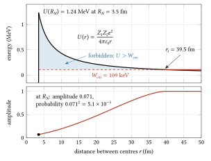
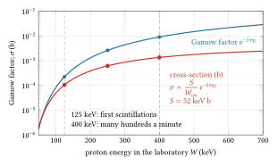
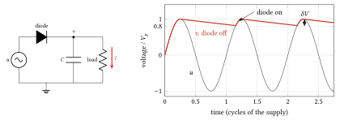
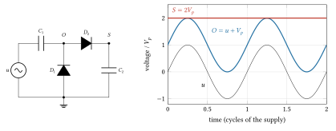
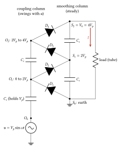
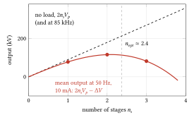
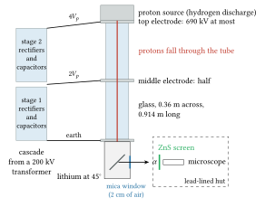

05 The voltage multiplier and the split atom
1919 to 1932, and the multiplier since: Greinacher’s cascade, the Cockcroft–Walton machine at the Cavendish, the injectors at CERN and Fermilab, the Dynamitron; the wall is the voltage that one transformer, one rectifier or one length of glass can hold.
Pre-requisites for this chapter.
From Part 0:
- F1 Calculus: the exponential and the logarithm (a wave dying away in a barrier, section 2), maxima (the optimum number of stages, section 8), integration by substitution (the barrier integral, section 2, and Bohr’s impulse) and Taylor series (the small-nucleus limit, section 2, and the diode’s conduction angle).
- F2 Vectors: the dot product (the reduced mass).
- F3 Mechanics: potential energy and turning points (section 1), impulse and the centre of mass and the centre-of-mass frame (sections 1 and 4, energy loss) and the Hamiltonian (named in section 2’s pre-requisite).
- F4 Electricity and magnetism: Coulomb’s potential energy, capacitors in series and their energy and Kirchhoff’s laws and the RC circuit (sections 5 to 8).
- F5 Oscillations and waves: phasors, the quality factor and LC and RLC circuits (the alternating supply and the resonant drive, sections 5 to 8).
- F6 Heat and probability: the Poisson distribution (coincidences, and the error of a count).
- F7 Atoms and quanta: the nuclear atom and \(e^2/4\pi\varepsilon_0\), Bohr’s atom, matter waves, the wavefunction and tunnelling, the nucleus, mass and binding energy, Q values and the Coulomb barrier and radioactivity (sections 1 to 4).
From the chapters, taught here or earlier:
- Nuclear reactions and Q value (continued): the size of a nucleus, the turning point, \(Q_{nuc}\) from mass excesses and how two products share it (sections 1 and 4).
- De Broglie waves and uncertainty (continued): the reduced mass, the wave of relative motion, and a wavefunction that decays inside a barrier (section 2).
- Tunnelling and the WKB approximation (continued): when the WKB formula holds, and Gamow’s alpha decay turned round (section 2).
- Cross-section, rate and luminosity basics (continued): the area \(\pi\bar\lambda^2\), the \(1/v\) law with its Coulomb factor, and the S-factor (sections 2 and 3).
- Energy loss in matter, range, Bragg peak (continued): Bethe’s formula, the stopping cross-section and the range (sections 3 and 4).
- Dielectrics, capacitance and field energy (chapter 1): \(q = CV\) and \(\Delta V = \Delta q/C\) for the stage capacitors (sections 5 to 7).
- RLC circuits and phasors (continued): the alternating supply, reactance, stray capacitance, resonant drive and internal impedance (sections 5 to 8).
- Diodes, rectifiers and capacitor networks: the rectifier, clamp and doubler, ripple, and charge counting in a periodic steady state (sections 5 to 7).
- How particle detectors work (continued): the amplified ionisation chamber and coincidence counting (the experiment of 14 April 1932).
- Counting statistics (Poisson) (chapter 1): the \(\sqrt N\) error of a count (counting the scintillations).
In one page
The wall. By 1928 Rutherford’s laboratory wanted protons fast enough to enter a nucleus. The Coulomb barrier of lithium is about 1.1 to 1.2 MeV, and nothing built then held a million volts. X-ray tubes ran at up to about 300 kV, transformers were awkward above about 100 kV, and a single rectifier or glass tube flashed over long before a megavolt.
The idea. Two ideas, which are one. Tunnelling (Gamow, 1928) says the barrier need not be climbed, only leaked through: protons of a few hundred keV get in, rarely, and a beam has very many protons. And a voltage can be built from parts that each hold a share: a cascade of capacitors and rectifiers fed by a modest transformer, in which every part sees twice the transformer’s peak, and an accelerating tube in sections, each holding its share. On 14 April 1932 Cockcroft and Walton, at the Cavendish Laboratory in Cambridge, sent protons onto lithium and saw alpha particles on a zinc sulphide screen from about 125 kV upwards.
The equations to remember. For \(n_s\) stages fed by a transformer of peak voltage \(V_p\), with stage capacitance \(C_s\), supply frequency \(f\) and load current \(I\):
\[ \begin{aligned} V_0 &= 2 n_s V_p \quad \text{(no load; every capacitor and rectifier sees } 2V_p\text{)} \\ \delta V &= \frac{I}{f C_s}\,\frac{n_s (n_s+1)}{2} \quad \text{(ripple, peak to peak)} \\ \Delta V &\approx \frac{I}{f C_s}\left(\frac{2}{3} n_s^3 + \frac{1}{2} n_s^2 + \frac{1}{3} n_s\right), \qquad n_{opt} \approx \sqrt{\frac{V_p f C_s}{I}} \\ \sigma(W_{cm}) &= \frac{S(W_{cm})}{W_{cm}}\, e^{-2\pi \eta_S}, \qquad 2\pi\eta_S = \frac{2\pi Z_1 Z_2\, \alpha}{\beta} \\ Y(W_0) &= f_7 \int_0^{W_0} \frac{\sigma(W)}{\varepsilon_{st}(W)}\, dW \quad \text{(thick-target yield per proton)} \end{aligned} \]
The symbols: \(V_0\) is the output with no load, \(\delta V\) the ripple and \(\Delta V\) the fall of the mean output under load (all in volts), and \(n_{opt}\) the number of stages that gives the most voltage (sections 6 to 8). \(\sigma\) is the reaction cross-section in barns (\(10^{-28}\) m\(^2\)), \(W_{cm}\) the energy of relative motion in the centre-of-mass frame, \(S\) the astrophysical S-factor in keV b, which holds the nuclear physics, \(\eta_S\) the Sommerfeld parameter, \(Z_1e\) and \(Z_2e\) the two charges, \(\alpha = e^2/(4\pi\varepsilon_0\hbar c) \approx 1/137\) the fine-structure constant (a pure number) and \(\beta = v/c\) the relative speed over the speed of light (section 2). \(Y\) is the chance that a proton of energy \(W_0\) reacts before a thick target stops it, \(f_7\) the fraction of lithium atoms that are lithium-7 and \(\varepsilon_{st}\) the stopping cross-section, the energy lost per unit path per target atom, in eV cm\(^2\) (section 3).
Numbers worth knowing by heart. A transformer of about 200 kV peak, fourfold multiplication, 800 kV designed, up to 690 kV on the tube giving protons of about 710 keV, currents up to about 10 μA. A tube of two glass cylinders, each 14 inches across and 36 inches long. Lithium-7 plus a proton gives two alphas and \(Q_{nuc} = 17.35\) MeV, about 8.7 MeV each, with a range of about 8.6 cm in air. From 125 to 400 kV the Gamow factor rises about 40-fold and a thick target’s yield about 120-fold. In 1932 they estimated one particle (in their fuller paper, one disintegration) per \(10^9\) protons at 250 kV. The cubic droop is why modern cascades run at tens of kilohertz: at 85 kHz a ten-stage stack sags about 3 kV at 10 mA; at 50 Hz the same parts could not deliver the current at all.
The wall
Particles too few and too slow
Rutherford transmuted nitrogen with alpha particles in 1919. In the decade after, other light elements were broken up the same way, and then progress stalled. Walton, in his Nobel lecture of 1951, gave the reasons: the radioactive sources were too weak and their alphas too slow, and the barriers around nuclei were known to be millions of volts high, far beyond anything applied to an X-ray tube or a cathode-ray tube (chapter 1, chapter 2). That pushed people towards methods that avoid the full voltage: the induction accelerator (Slepian, Wideroe) and repeated small kicks (Ising 1924, Wideroe 1928). Walton had already worked on both at the Cavendish. They are later chapters (chapter 9, chapter 11); in 1929 both looked like long projects.
Tunnelling changes the target
In 1928 George Gamow, and independently Ronald Gurney and Edward Condon, explained alpha decay by quantum tunnelling: an alpha leaves a nucleus without the energy to climb over its barrier. Gamow visited the Cavendish in late 1928 or January 1929 (Cockcroft’s Nobel lecture says 1928; some accounts give January 1929), and John Cockcroft discussed the reverse problem with him. Cockcroft then sent Rutherford a memorandum. In Cockcroft’s account it showed a quite high probability for a proton of only 300 kV to penetrate boron, and better conditions still for lithium; Walton remembered it as showing that even 100 keV protons had a small but not negligible chance. Either way the target moved from millions of volts to hundreds of thousands, and since a microampere is \(6.24 \times 10^{12}\) protons a second, a small chance per proton means many events.
Cockcroft came to physics through electrical engineering: the College of Technology in Manchester and two years as an apprentice at the Metropolitan-Vickers company (Metrovick), before mathematics at Cambridge. Rutherford agreed to the work, and Ernest Walton, a research student from Ireland, joined him.
The voltage wall itself
Walton described their aim as potentials of up to 300 kV, about the highest anyone had applied to a vacuum tube for X-rays or cathode rays. Each piece of the chain was at its limit:
- The transformer. Its secondary must surround the core, so all its insulation is crowded into one place; Humphries notes that transformers are inconvenient above about 100 kV for this reason.
- The rectifier. The high-voltage rectifier of the 1920s was the kenotron, a vacuum diode developed by Saul Dushman at General Electric in 1914 and 1915 for X-ray supplies, its reverse voltage limited by breakdown in and along its glass. Mercury-arc rectifiers were made for the heavy currents of industry, not for hundreds of kilovolts.
- The tube. The conventional tubes were large glass bulbs with two stems, and a long stretch of glass holding hundreds of kilovolts flashes over along its surface.
The common cause: breakdown is set by the field, volts per metre, and by how fields concentrate at edges and on insulator surfaces (chapter 4). A voltage a part cannot hold alone must be shared among parts.
The physics
Pre-requisite (continued): Nuclear reactions and Q value
Pre-requisite. This continues Nuclear reactions and Q value in chapter 1, which gave the notation of reactions, what they conserve, alpha decay and the centre-of-mass energy on a fixed target. It adds the size of a nucleus, the classical turning point, the energy a reaction releases worked out from tabulated masses, and how two products share that energy. Section 1 uses the first two for a proton against lithium; section 4 uses the rest for the two alphas. Taught from Landau and Lifshitz, vol. 1, §§13 and 16 (the reduced mass, the break-up of a particle into two), and vol. 2, §§9 and 11 (rest energy, decay of particles); the masses are those of the Atomic Mass Evaluation 2020 (AME2020).
The size of a nucleus. Part 0 met the nucleus in F7, section 10. Experiments that scatter electrons or alphas off nuclei find that nuclear matter has nearly the same density in every nucleus: each nucleon takes up about the same volume. If the volume grows in proportion to the mass number \(A\) (the number of protons and neutrons), the radius grows as the cube root:
\[ R = r_0 A^{1/3}, \qquad r_0 \approx 1.2 \text{ fm}, \]
with 1 fm \(= 10^{-15}\) m. The constant density this implies is one nucleon per \(\tfrac{4}{3}\pi r_0^3\), or \(0.138\) nucleons per fm\(^3\), about \(2.3 \times 10^{17}\) kg/m\(^3\). Some radii with \(r_0 = 1.2\) fm:
| Nucleus | \(A\) | \(R\) (fm) |
|---|---|---|
| helium-4 (alpha) | 4 | 1.90 |
| lithium-7 | 7 | 2.30 |
| boron-11 | 11 | 2.67 |
| lead-208 | 208 | 7.11 |
For a single proton the formula gives 1.2 fm, which is only a bookkeeping value. Two nuclei touch when their centres are \(R_N = r_0(A_1^{1/3} + A_2^{1/3})\) apart; chapter 1, section 1.2, puts the Coulomb barrier at that distance and explains why \(r_0\) for the barrier is often taken larger, 1.4 to 1.5 fm: the nuclear force reaches about a femtometre beyond the charge. The edge is soft, so every barrier height carries an uncertainty of 20 per cent or so.
The classical turning point. Take the collision in the centre-of-mass frame, head on (no angular momentum). Far apart, the relative motion carries the kinetic energy \(W_{cm}\). At separation \(r\) part of it has become potential energy \(U(r) = Z_1 Z_2 e^2/(4\pi\varepsilon_0 r)\), so the kinetic energy left is \(W_{cm} - U(r)\). Classically the particles stop where this reaches zero and then fly apart again:
\[ U(r_t) = W_{cm} \quad\Longrightarrow\quad r_t = \frac{Z_1 Z_2 e^2}{4\pi\varepsilon_0\, W_{cm}}, \]
with \(e^2/4\pi\varepsilon_0 = 1.440\) MeV fm (the combination met in F7, section 6; it equals \(\alpha\hbar c = 197.33/137.036\) MeV fm). This is the turning point of F3, section 5, where all the kinetic energy has become potential energy. Inside \(r_t\) the kinetic energy would be negative; classical mechanics forbids the region, and only the wave picture lets a particle in (section 2). Example: a 300 keV proton on boron-11 brings \(W_{cm} = 300 \times 11.009/12.017 = 274.8\) keV, so it turns at \(r_t = 5 \times 1.440/0.2748 = 26.2\) fm, while the surfaces touch at \(R_N = 1.2\,(1 + 11^{1/3}) = 3.87\) fm, where the barrier is 1.86 MeV.
Mass is energy. A body at rest of mass \(m\) has energy \(mc^2\) (Landau and Lifshitz, vol. 2, §9; in Part 0, F7, sections 11 and 12). If a reaction leaves less rest mass than it started with, the difference has become kinetic energy. The energy released is
\[ Q_{nuc} = \Big(\sum m_{\text{before}} - \sum m_{\text{after}}\Big)\, c^2 . \]
\(Q_{nuc} > 0\): the reaction releases energy (exoergic). \(Q_{nuc} < 0\): it must be supplied, from the kinetic energy of the collision (endoergic). The unit of mass used for atoms is the atomic mass unit u, one twelfth of the mass of a carbon-12 atom, and
\[ 1\ \mathrm{u}\, c^2 = 931.494 \text{ MeV}. \]
Atomic masses and mass excesses. Tables list the masses of neutral atoms, electrons included, because that is what mass spectrometry measures. They usually list them as a mass excess \(\Delta\), the difference between the atomic mass \(M\) and \(A\) atomic mass units, expressed as an energy:
\[ \Delta = (M - A\,\mathrm{u})\,c^2 . \]
A reaction conserves the number of nucleons, so the \(A\,\mathrm{u}\) terms are the same on both sides and cancel:
\[ Q_{nuc} = \sum \Delta_{\text{before}} - \sum \Delta_{\text{after}} . \]
What about the electrons? Each atomic mass includes \(Z\) electrons. Charge is conserved, so the total \(Z\) is the same before and after, and so is the number of electrons counted: their masses cancel too. (Their binding energies, a few eV to keV, do not quite cancel, but are negligible against MeV.) So atomic masses can be used directly, as if the reaction were between neutral atoms.
Worked case. For lithium-7 plus a proton, with the AME2020 values \(\Delta(^7\mathrm{Li}) = 14\,907.105\) keV, \(\Delta(^1\mathrm{H}) = 7\,288.971\) keV and \(\Delta(^4\mathrm{He}) = 2\,424.916\) keV, \(Q_{nuc} = 14\,907.105 + 7\,288.971 - 2 \times 2\,424.916 = 17\,346\) keV. In mass units: the atoms weigh \(7.016003 + 1.007825 = 8.023828\) u before and \(2 \times 4.002603 = 8.005206\) u after, a decrease of \(0.018622\) u, and \(0.018622 \times 931.494 = 17.346\) MeV. Subtracting the electron masses first (three for lithium, one for hydrogen, two for each helium) gives the same number to the last keV. Other reactions of the period:
| Reaction | \(Q_{nuc}\) (MeV) |
|---|---|
| \(^7\mathrm{Li} + p \to 2\,^4\mathrm{He}\) | +17.346 |
| \(^{11}\mathrm{B} + p \to 3\,^4\mathrm{He}\) | +8.682 |
| \(^6\mathrm{Li} + p \to {}^4\mathrm{He} + {}^3\mathrm{He}\) | +4.020 |
| \(^{14}\mathrm{N} + {}^4\mathrm{He} \to {}^{17}\mathrm{O} + p\) | \(-1.192\) |
Rutherford’s reaction of 1919 absorbs energy: the alpha’s kinetic energy pays for it.
Two products share the energy. Suppose the reaction gives two bodies, of masses \(m_a\) and \(m_b\). In the centre-of-mass frame the total momentum is zero before, so it is zero after: the two fly apart back to back with equal and opposite momenta of size \(p^*\) (Landau and Lifshitz, vol. 1, §16). The energy available is what came in plus what the reaction released, \(Q_{nuc} + W_{cm}\). Non-relativistically, with kinetic energy \(p^2/2m\) for each,
\[ \frac{p^{*2}}{2m_a} + \frac{p^{*2}}{2m_b} = \frac{p^{*2}}{2}\,\frac{m_a + m_b}{m_a m_b} = Q_{nuc} + W_{cm} \quad\Longrightarrow\quad \frac{p^{*2}}{2} = \frac{m_a m_b}{m_a + m_b}\,(Q_{nuc} + W_{cm}). \]
Dividing by \(m_a\), and then by \(m_b\), gives each product’s share:
\[ W_a = \frac{p^{*2}}{2m_a} = \frac{m_b}{m_a + m_b}\,(Q_{nuc} + W_{cm}), \qquad W_b = \frac{p^{*2}}{2m_b} = \frac{m_a}{m_a + m_b}\,(Q_{nuc} + W_{cm}). \]
The lighter product takes the larger share; equal masses share equally. For lithium-6 plus a slow proton the alpha takes \(4.020 \times 3.016/7.019 = 1.727\) MeV and the helium-3 \(2.292\) MeV. For lithium-7 the two alphas take 8.673 MeV each. Non-relativistic mechanics is good enough: an 8.7 MeV alpha has \(\beta = 0.068\), and its momentum is 254.4 MeV/\(c\) exactly against 254.3 MeV/\(c\) from \(\sqrt{2mW}\).
Back to the laboratory. The laboratory sees the centre of mass moving at \(V = \sqrt{2 m_1 W}/(m_1 + m_2)\), with \(m_1\) and \(W\) the projectile’s mass and kinetic energy: the total momentum, which is the projectile’s \(\sqrt{2m_1W}\), divided by the total mass (F3, section 6). Each product’s laboratory velocity is its centre-of-mass velocity plus \(V\). For a 400 keV proton on lithium-7, \(V/c = 0.0037\) while each alpha moves at \(0.069c\) in the centre-of-mass frame, so the alphas’ directions tilt forward by at most \(\arctan(0.0037/0.069) \approx 3°\) each: they leave between about 174° and 180° apart. This is why two screens on opposite sides of the target catch pairs.
Exercise 1. From the mass excesses \(\Delta(^{14}\mathrm{N}) = 2\,863.417\) keV, \(\Delta(^4\mathrm{He}) = 2\,424.916\) keV, \(\Delta(^{17}\mathrm{O}) = -808.764\) keV and \(\Delta(^1\mathrm{H}) = 7\,288.971\) keV, find \(Q_{nuc}\) for \(^{14}\mathrm{N}(\alpha, p)^{17}\mathrm{O}\). Can a 7.687 MeV alpha pay for it?
Answer
\(Q_{nuc} = 2\,863.417 + 2\,424.916 - (-808.764) - 7\,288.971 = -1\,191.9\) keV, so the reaction absorbs 1.192 MeV. Only the centre-of-mass energy is available: \(W_{cm} = 7.687 \times 14.003/(4.003 + 14.003) = 5.98\) MeV, well above 1.19 MeV, so yes. (Whether the alpha gets close enough is the barrier question of chapter 1.)
Exercise 2. A 400 keV proton strikes lithium-6. Find the kinetic energies of the alpha and the helium-3 in the centre-of-mass frame. Masses 1.007825, 6.015123, 4.002603 and 3.016029 u.
Answer
\(W_{cm} = 400 \times 6.015/(1.008 + 6.015) = 342.6\) keV; the energy shared is \(4\,019.7 + 342.6 = 4\,362.3\) keV. The alpha takes \(4\,362.3 \times 3.016/7.019 = 1\,874.6\) keV and the helium-3 \(4\,362.3 \times 4.003/7.019 = 2\,487.8\) keV.
Exercise 3. Boron-11 plus a proton gives three alphas with \(Q_{nuc} = 8.682\) MeV. Why can you not give each alpha’s energy as you did for lithium-7, and what is their mean energy for a slow proton?
Answer
With three bodies, zero total momentum and fixed total energy still leave freedom: the three momenta can form many different triangles, so the energies vary from event to event and form a spread, not a single line. Only the mean is fixed: \(8.682/3 = 2.89\) MeV each (plus a third of \(W_{cm}\)).
1. The target: a proton against a lithium nucleus
A proton (charge \(Z_1 e\), \(Z_1 = 1\)) approaching a lithium nucleus (charge \(Z_2 e\), \(Z_2 = 3\)) has the Coulomb potential energy
\[ U(r) = \frac{Z_1 Z_2 e^2}{4\pi\varepsilon_0 r}, \]
with \(r\) the distance between centres and \(e^2/4\pi\varepsilon_0 = 1.440\) MeV fm. Inside a radius \(R_N\) the nuclear force takes over. A common estimate is \(R_N = r_0 (A_1^{1/3} + A_2^{1/3})\) with \(r_0\) between 1.2 and 1.4 fm and \(A\) the mass numbers: for p on lithium-7, \(R_N = 3.50\) fm and \(U(R_N) = 1.24\) MeV, or \(R_N = 4.08\) fm and 1.06 MeV. The radius is a model, not a measured edge.
The energy that counts is that in the centre-of-mass frame. For a proton of kinetic energy \(W\) on a nucleus of mass \(m_2\) at rest, \(W_{cm} = W m_2/(m_p + m_2)\), which for lithium-7 is \(0.874\,W\). A 125 keV proton brings 109 keV, and classically turns back at
\[ r_t = \frac{Z_1 Z_2 e^2}{4\pi\varepsilon_0 W_{cm}} = 39.5 \text{ fm}, \]
ten times farther out than the nuclear surface. These protons are slow: \(\beta = 0.0163\) at 125 keV and \(0.0389\) at 710 keV, where \(\gamma = 1.00076\). Non-relativistic mechanics is exact to a tenth of a per cent here.

Figure 5.1. A 125 keV proton against lithium-7, in the centre-of-mass frame. Top: the Coulomb potential energy \(U(r)\) outside \(R_N = 3.5\) fm (inside, the nuclear attraction takes over; its depth, tens of MeV, is off the scale) and the energy of relative motion, \(W_{cm} = 109\) keV. Classically the proton turns back at \(r_t = 39.5\) fm, and the shaded stretch, where \(U > W_{cm}\), is forbidden. Bottom: what the wave picture says instead (the next two pre-requisites and section 2): the amplitude of the proton’s wave falls steadily through the forbidden stretch, computed from the WKB integral, to 0.071 of its outside value at \(R_N\), a probability of \(5.1 \times 10^{-3}\).
Pre-requisite (continued): De Broglie waves and uncertainty
Pre-requisite. This continues De Broglie waves and uncertainty in chapter 1, which gave the wavelength \(h/p\), the reduced wavelength \(\hbar/p\), and the rule that classical paths hold when the reduced wavelength is small against the distances involved. It adds three things section 2 needs: how a collision of two bodies becomes the motion of one body of reduced mass \(m_r\); the wave of that relative motion; and why a wavefunction oscillates where the kinetic energy is positive and dies away where it is negative. Taught from Landau and Lifshitz, vol. 1, §13 (the reduced mass), and vol. 3, §§17 and 32 (the Schrödinger equation, motion in a central field); Tong, Classical Mechanics, §5.1.1 (the two-body problem is really a one-body problem) and Quantum Mechanics, §10.3.
Two bodies, one coordinate. A proton at position \(\mathbf{r}_1\) (mass \(m_1\)) and a nucleus at \(\mathbf{r}_2\) (mass \(m_2\)) push on each other with a force that depends only on their separation \(\mathbf{r} = \mathbf{r}_1 - \mathbf{r}_2\). Define the centre of mass \(\mathbf{R} = (m_1\mathbf{r}_1 + m_2\mathbf{r}_2)/M\), with \(M = m_1 + m_2\). Solving these two definitions for the positions,
\[ \mathbf{r}_1 = \mathbf{R} + \frac{m_2}{M}\,\mathbf{r}, \qquad \mathbf{r}_2 = \mathbf{R} - \frac{m_1}{M}\,\mathbf{r}. \]
Put the velocities into the kinetic energy, squaring each bracket with the dot product (\((\mathbf{a} + \mathbf{b})^2 = \mathbf{a}^2 + 2\,\mathbf{a}\cdot\mathbf{b} + \mathbf{b}^2\), F2, section 2):
\[ \begin{aligned} T &= \tfrac{1}{2} m_1 \Big(\dot{\mathbf{R}} + \tfrac{m_2}{M}\dot{\mathbf{r}}\Big)^2 + \tfrac{1}{2} m_2 \Big(\dot{\mathbf{R}} - \tfrac{m_1}{M}\dot{\mathbf{r}}\Big)^2 \\ &= \tfrac{1}{2} M \dot{\mathbf{R}}^2 + \Big(\tfrac{m_1 m_2}{M} - \tfrac{m_2 m_1}{M}\Big)\dot{\mathbf{R}}\cdot\dot{\mathbf{r}} + \tfrac{1}{2}\,\frac{m_1 m_2^2 + m_2 m_1^2}{M^2}\,\dot{\mathbf{r}}^2 \\ &= \tfrac{1}{2} M \dot{\mathbf{R}}^2 + \tfrac{1}{2}\, m_r\, \dot{\mathbf{r}}^2, \qquad m_r = \frac{m_1 m_2}{m_1 + m_2}. \end{aligned} \]
The cross term vanishes. No force acts on the centre of mass as a whole, so it drifts at constant velocity and carries a fixed kinetic energy that the collision can never use. What is left is one fictitious particle of mass \(m_r\), the reduced mass, at position \(\mathbf{r}\) in the potential \(U(r)\). The same separation works in quantum mechanics: the Hamiltonian (the energy written in terms of positions and momenta, F3, section 12) splits into a free centre of mass and a relative motion with mass \(m_r\) (Landau and Lifshitz, vol. 3, §32).
What it gives. Two results follow at once.
- The energy available. For a target at rest the relative speed \(v\) is the projectile’s laboratory speed, and the energy of relative motion is \(W_{cm} = \tfrac{1}{2} m_r v^2 = \tfrac{1}{2} m_1 v^2 \cdot m_2/(m_1 + m_2) = W\, m_2/(m_1 + m_2)\), the formula of chapter 1.
- The mass in every quantum formula. The reduced mass is always smaller than the lighter of the two. With nuclear masses, proton on lithium-7: \(m_r = 0.8808\) u; proton on proton: 0.504 u; alpha on nitrogen-14: 3.11 u; proton on uranium-238: 1.003 u, almost the proton’s own mass.
The wave of relative motion. The relative motion has momentum \(m_r v = \sqrt{2 m_r W_{cm}}\), so its reduced de Broglie wavelength is
\[ \bar\lambda = \frac{\hbar}{m_r v} = \frac{\hbar}{\sqrt{2 m_r W_{cm}}}, \qquad k = \frac{1}{\bar\lambda}, \]
with \(k\) the wave number in m\(^{-1}\). This, not the laboratory wavelength of the proton, is the one that matters for the collision. For a proton on lithium-7, with \(\hbar c = 197.33\) MeV fm and \(m_r c^2 = 820.4\) MeV:
| \(W\) (lab, keV) | \(W_{cm}\) (keV) | \(\bar\lambda\) (fm) | \(r_t\) (fm) |
|---|---|---|---|
| 125 | 109.3 | 14.7 | 39.5 |
| 250 | 218.6 | 10.4 | 19.8 |
| 400 | 349.8 | 8.2 | 12.4 |
The wave is two to four times larger than the nucleus (\(R_N \approx 3.5\) fm) and not much smaller than the turning distance. By chapter 1’s rule the proton’s path near the nucleus is not classical. The ratio has a name: \(r_t/(2\bar\lambda) = Z_1 Z_2 e^2/(4\pi\varepsilon_0 \hbar v) = \eta_S\), the Sommerfeld parameter, 1.34 at 125 keV. When \(\eta_S \gg 1\) the wave is small against the orbit and the motion is classical; here it is not.
Where Schrödinger’s equation comes from. Part 0 (F7, section 9) named the equation that governs the wavefunction without writing it. For a wave of fixed energy it can be made plausible in a few lines. A free particle of momentum \(p\) has a wave \(\psi = \sin kr\) with \(p = \hbar k\) (de Broglie, F7, section 8). Differentiating twice, \(d^2\psi/dr^2 = -k^2\psi\), so the kinetic energy \(p^2/2m_r = \hbar^2k^2/2m_r\) can be read off the wave itself as \(-(\hbar^2/2m_r)\,(d^2\psi/dr^2)/\psi\). Energy conservation, kinetic plus potential equals total, then becomes an equation for the wave, \(-(\hbar^2/2m_r)\,d^2\psi/dr^2 + U\psi = W_{cm}\psi\). Schrödinger’s step was to keep this equation where \(U\) varies and the wave is no longer a simple sine. It is not derived from anything older; it is tested by everything since.
Oscillating and decaying. For a head-on collision (zero angular momentum) the wave converges on the nucleus and spreads out from it equally in all directions. Such a wave falls off as \(1/r\) just because its area grows; the radial wavefunction multiplied by \(r\), written \(\psi(r)\) here, takes that out, and obeys the one-dimensional Schrödinger equation just made plausible (Landau and Lifshitz, vol. 3, §32)
\[ -\frac{\hbar^2}{2 m_r}\,\frac{d^2\psi}{dr^2} + U(r)\,\psi = W_{cm}\,\psi \quad\Longrightarrow\quad \frac{d^2\psi}{dr^2} = -\frac{2 m_r}{\hbar^2}\,\big[W_{cm} - U(r)\big]\,\psi . \]
Read the sign. Where \(W_{cm} > U\) (kinetic energy positive), \(\psi''\) has the opposite sign to \(\psi\): the curve always bends back towards the axis, and \(\psi\) oscillates with a local wave number \(k(r) = \sqrt{2m_r(W_{cm} - U)}/\hbar\). Where \(U > W_{cm}\) (the classically forbidden region), \(\psi''\) has the same sign as \(\psi\): the curve bends away from the axis, and \(\psi\) grows or dies away exponentially, locally as \(e^{\pm\kappa r}\) (differentiate \(e^{\kappa r}\) twice and it returns multiplied by \(\kappa^2\), F1, section 4) with
\[ \kappa(r) = \frac{\sqrt{2 m_r\,[U(r) - W_{cm}]}}{\hbar} . \]
For a wave coming in from outside, the physical solution is the one that dies away as it goes in. A forbidden region is not a wall for a wave, only a stretch of steady attenuation, with \(1/\kappa\) the length over which the amplitude falls by a factor \(e\). For a 125 keV proton on lithium-7: at \(r = 20\) fm, \(1/\kappa = 14.9\) fm; at 10 fm, 8.6 fm; at 5 fm, 5.6 fm. The barrier from 39.5 fm down to 3.5 fm is several decay lengths thick. Adding up the attenuation, \(\int \kappa\, dr = 2.64\) over the barrier, so the amplitude reaching the nucleus is \(e^{-2.64} = 0.071\) of what it was outside, and the probability, its square, is \(5.1 \times 10^{-3}\): the last column of the table in section 2.
Exercise 1. An alpha of 7.687 MeV strikes nitrogen-14 at rest (masses 4.003 and 14.003 u). Find the reduced mass and the energy of relative motion.
Answer
\(m_r = 4.003 \times 14.003/18.006 = 3.113\) u. \(W_{cm} = 7.687 \times 14.003/18.006 = 5.98\) MeV; the remaining 1.71 MeV stays with the moving centre of mass.
Exercise 2. Show that \(\eta_S = r_t/(2\bar\lambda)\), and check it for a 250 keV proton on lithium-7.
Answer
\(r_t = Z_1 Z_2 e^2/(4\pi\varepsilon_0 W_{cm})\) with \(W_{cm} = \tfrac{1}{2} m_r v^2\), and \(\bar\lambda = \hbar/(m_r v)\). Then
\[ \frac{r_t}{2\bar\lambda} = \frac{Z_1 Z_2 e^2}{4\pi\varepsilon_0}\cdot\frac{2}{m_r v^2}\cdot\frac{m_r v}{2\hbar} = \frac{Z_1 Z_2 e^2}{4\pi\varepsilon_0 \hbar v} = \eta_S . \]
At 250 keV: \(19.8/(2 \times 10.4) = 0.95\), the \(\eta_S\) of the table in section 2.
Pre-requisite (continued): Tunnelling and the WKB approximation
Pre-requisite. This continues Tunnelling and the WKB approximation in chapter 1, which gave tunnelling through a barrier, the WKB transmission \(\exp\big(-(2/\hbar)\int\sqrt{2m(U - E)}\,dx\big)\) and the Gamow factor \(e^{-2\pi\eta_S}\), and compared the exponents of two alpha emitters. It adds when that formula can be trusted, and Gamow’s model of an alpha emitter’s half-life, the problem Cockcroft turned round. Section 2 uses both: it applies the formula at energies where it is only a guide, and it starts from Gamow’s idea. Taught from Landau and Lifshitz, vol. 3, §46 (the quasi-classical condition) and §50 with its Problem 2 (penetration of a barrier, the Coulomb case); Tong, Quantum Mechanics, §10.3 (the WKB method, tunnelling out of a trap).
When WKB holds. The WKB wavefunction is built by assuming that the local wavelength changes little over one wavelength, the way geometrical optics assumes a lens is large compared with the light’s wavelength. In symbols (Landau and Lifshitz, vol. 3, eq. 46.6, written with the reduced wavelength):
\[ \left|\frac{d\bar\lambda}{dr}\right| \ll 1, \qquad \bar\lambda(r) = \frac{\hbar}{|p(r)|}, \qquad |p(r)| = \sqrt{2 m_r\,|W_{cm} - U(r)|}. \]
An equivalent form uses the force \(F = -dU/dr\): \(\hbar m_r |F|/|p|^3 \ll 1\). Two things follow.
- The condition fails near every turning point, where \(p \to 0\) and the wavelength becomes infinite. WKB gets round this by matching the solutions on either side through the turning point (Landau and Lifshitz, vol. 3, §§47 and 50). The result is the transmission \(D = e^{-G}\) with \(G = (2/\hbar)\int |p|\,dr\), and its prefactor of exactly 1 is right only if \(G \gg 1\). When \(G\) is a few, the exponent’s shape is still right but the number can be off by a factor of order one.
- For the Coulomb barrier the condition comes down to \(\eta_S \gg 1\) (Landau and Lifshitz, §50, Problem 2), the same as the condition that the wave is small against the orbit.
Numbers for a proton on lithium-7. At 125 keV, \(\eta_S = 1.34\) and \(G = 5.3\); over the inner half of the barrier \(\hbar m_r|F|/|p|^3\) is 0.57 to 0.8, and larger further out: nowhere small. At 400 keV, \(\eta_S = 0.75\) and \(G = 1.7\). At the energies of 1932 the WKB number is a guide, good for trends and for factors of a few; the exact Coulomb wavefunction, which section 2’s cross-section uses (see the next section), keeps the same exponential \(e^{-2\pi\eta_S}\). For alpha decay, below, \(\eta_S\) is 18 to 27 and WKB is excellent.
Gamow’s alpha decay. In 1928 Gamow, and Gurney and Condon, pictured an alpha particle already formed inside a heavy nucleus of radius \(R\), bouncing between the walls of the well. Each time it meets the wall it tries the barrier and escapes with probability \(e^{-G}\). If it moves at speed \(v\) inside, it meets the wall about \(\nu = v/(2R)\) times a second, so the decay constant (the chance of decay per second) and half-life of F7, section 13 are
\[ \lambda_d = \nu\, e^{-G}, \qquad T_{1/2} = \frac{\ln 2}{\lambda_d}. \]
\(G\) is the Coulomb barrier integral of section 2 with \(Z_1 = 2\), \(Z_2\) the charge of the daughter nucleus, \(m_r\) the reduced mass of alpha and daughter, and \(W_{cm} = Q_{nuc}\) of the decay. Taking \(R = 1.2\,(A_d^{1/3} + 4^{1/3})\) fm and, crudely, \(v = \sqrt{2Q_{nuc}/m_r}\):
| Emitter | \(Q_{nuc}\) (MeV) | \(r_t\) (fm) | \(G\) | \(\nu\) (s\(^{-1}\)) | \(T_{1/2}\), model | \(T_{1/2}\), measured |
|---|---|---|---|---|---|---|
| polonium-214 (radium C′) | 7.834 | 30.1 | 39.0 | \(1.1 \times 10^{21}\) | 55 μs | 164 μs |
| radium-226 | 4.871 | 50.9 | 72.8 | \(8.4 \times 10^{20}\) | 1 060 years | 1 600 years |
| uranium-238 | 4.270 | 60.7 | 88.0 | \(7.8 \times 10^{20}\) | \(4.6 \times 10^9\) years | \(4.47 \times 10^9\) years |
A factor of 1.8 in energy changes the half-life by 21 orders of magnitude, and the model follows it to within a factor of 3. (Agreement this close is partly luck: \(\nu\) is a rough estimate and \(R\) is a model. The point is the exponent.) This steepness is what made Gamow’s theory convincing, and it is the same steepness that makes the lithium yield of section 3 rise 120-fold between 125 and 400 keV.
Turned round. The barrier is the same whichever way the particle crosses it. Cockcroft’s question was the reverse of Gamow’s: what is the chance that a particle sent in from outside reaches the nucleus? The exponent \(2\pi\eta_S = 2\pi Z_1 Z_2 \alpha/\beta\), with \(\alpha = e^2/(4\pi\varepsilon_0\hbar c) \approx 1/137\) the fine-structure constant, a pure number, and \(\beta\) the relative speed over \(c\) (section 2 derives this form), grows with the product of the charges and, through \(\beta = \sqrt{2W_{cm}/m_r c^2}\), with the square root of the reduced mass. So the best projectile is the lightest, least charged one, the proton, on the least charged target that will react. At \(W_{cm} = 218.6\) keV on lithium-7, a proton has \(2\pi\eta_S = 5.96\); an alpha with the same centre-of-mass energy has twice the charge and \(m_r = 2.55\) u, so \(2\pi\eta_S = 20.3\), and its Gamow factor is \(1.6 \times 10^{-9}\) against \(2.6 \times 10^{-3}\).
Exercise 1. Using the table, find how much larger \(e^{-G}\) is for polonium-214 than for uranium-238, and compare the ratio of measured half-lives.
Answer
\(e^{88.0 - 39.0} = e^{49.0} = 1.9 \times 10^{21}\). The measured half-lives are \(4.47 \times 10^9 \times 3.156 \times 10^7\) s \(= 1.41 \times 10^{17}\) s and \(1.64 \times 10^{-4}\) s, a ratio of \(8.6 \times 10^{20}\). The barrier factor alone accounts for almost all of 21 orders of magnitude; the small rest is \(\nu\) and the model’s crudeness.
Exercise 2. Radium-226’s \(Q_{nuc}\) is 4.871 MeV. If it were 5 per cent larger, by what factor would the half-life change? (The full calculation gives \(G = 69.2\) instead of 72.8.)
Answer
The half-life is proportional to \(e^{G}\) (ignoring the small change in \(\nu\)), so it falls by \(e^{72.8 - 69.2} = e^{3.6} \approx 37\) (35 with the unrounded values of \(G\)). A 5 per cent change in energy, a factor of about 35 in lifetime.
Exercise 3. Is WKB trustworthy for a 50 keV proton on lithium-7? (\(W_{cm} = 43.7\) keV.)
Answer
\(\eta_S = 3\alpha/\beta\) with \(\beta = \sqrt{2 \times 0.0437/820.4} = 0.0103\), so \(\eta_S = 3 \times 0.00730/0.0103 = 2.12\) and \(2\pi\eta_S = 13.3\); the full integral gives \(G = 10.2\). Now \(G \gg 1\), and over the inner half of the barrier \(\hbar m_r|F|/|p|^3\) is 0.36 to 0.5: better than at 125 keV, but \(\eta_S\) of 2 is still not deep in the classical regime. The exponential trend is reliable; the absolute number remains an estimate.
Pre-requisite (continued): Cross-section, rate and luminosity basics
Pre-requisite. This continues Cross-section, rate and luminosity basics in chapter 3, which gave the cross-section as an effective area, attenuation in a layer and the rate \(n\sigma v\); chapter 1, section 6, gave the barn (\(10^{-28}\) m\(^2\)) and the rate on a thin target. It adds what a slow charged particle’s cross-section looks like: the largest area it can present, \(\pi\bar\lambda^2\); why its reaction cross-section falls as \((1/W_{cm})\,e^{-2\pi\eta_S}\); and the astrophysical S-factor that carries the rest. Section 2 writes the lithium cross-section in this form and section 3 adds it up through a thick target. Taught from Landau and Lifshitz, vol. 3, §142 (reactions in the partial-wave picture) and §143 (slow particles, the \(1/v\) law and its Coulomb form).
Rate from flux and probability. A proton crossing a layer of thickness \(dx\) holding \(n_t\) target nuclei per unit volume reacts with probability \(n_t\sigma\,dx\), as long as this is small. A beam of \(\dot N\) protons a second gives \(\dot N n_t\sigma\,dx\) reactions a second: the flux of particles times the probability for each. Example: 1 μA is \(6.24 \times 10^{12}\) protons a second. Lithium metal (density 0.534 g/cm\(^3\)) has \(n_t = 4.63 \times 10^{22}\) atoms per cm\(^3\), of which 92 per cent are lithium-7. A layer 0.1 μm thick, with \(\sigma = 6.1 \times 10^{-4}\) b \(= 6.1 \times 10^{-28}\) cm\(^2\) at 250 keV, gives each proton a chance \(0.92 \times 4.63 \times 10^{22} \times 10^{-5} \times 6.1 \times 10^{-28} = 2.6 \times 10^{-10}\), and the beam about 1 600 reactions a second.
The largest area: \(\pi\bar\lambda^2\). A slow particle’s wave is larger than the nucleus. Classically, a particle passing at impact parameter \(b\) carries angular momentum \(m_r v b\); in quantum mechanics angular momentum comes in units of \(\hbar\), so the part of the beam with angular momentum zero is, roughly, the part within \(b \lesssim \hbar/(m_r v) = \bar\lambda\) of the axis. At low energy only this head-on part comes close enough to react. The wave treatment makes it exact (Landau and Lifshitz, vol. 3, eq. 142.7): the reaction cross-section for angular momentum \(l\hbar\) (\(l = 0, 1, 2, \dots\)) can never exceed \((2l+1)\pi/k^2\), so for \(l = 0\)
\[ \sigma \le \pi\bar\lambda^2 = \frac{\pi\hbar^2}{2 m_r W_{cm}} , \]
a disc whose radius is the reduced wavelength. The limit is reached only if every head-on particle that arrives is absorbed. For a proton on lithium-7 it is 6.8 b at 125 keV, 3.4 b at 250 keV and 2.1 b at 400 keV, far larger than the nucleus’s own face, \(\pi(3.5\ \text{fm})^2 = 0.38\) b. At low energy the wave, not the target, sets the scale, and the scale grows as \(1/W_{cm}\).
The \(1/v\) law. Why should a reaction cross-section depend on speed at all? A reaction can happen only if the particle is at the nucleus, so its rate per target nucleus is proportional to the probability density \(|\psi|^2\) there. A cross-section is a rate divided by the incident flux, \(|\psi|^2 v\) for a plane wave. For a neutral particle the wave reaches the nucleus undisturbed, so the density there is fixed and \(\sigma \propto 1/v\) (Bethe, 1935; Landau and Lifshitz, vol. 3, §143).
The Coulomb factor. For a charged particle the repulsion thins the wave before it reaches the nucleus. Solving the Schrödinger equation exactly in a Coulomb field gives the density at the centre, relative to a free wave of the same flux (Landau and Lifshitz, vol. 3, eq. 143.5, in ordinary units):
\[ \frac{|\psi_{Coulomb}(0)|^2}{|\psi_{free}(0)|^2} = \frac{2\pi\eta_S}{e^{2\pi\eta_S} - 1} \;\approx\; 2\pi\eta_S\, e^{-2\pi\eta_S} \quad (2\pi\eta_S \gg 1). \]
This is exact for a point charge; the WKB integral of section 2 is an approximation to it that also accounts for the nucleus’s finite size. Multiply the \(1/v\) law by it. Since \(\eta_S \propto 1/v\), the factor \(2\pi\eta_S\) is another \(1/v\), and
\[ \sigma \propto \frac{1}{v}\cdot\frac{1}{v}\,e^{-2\pi\eta_S} \propto \frac{1}{W_{cm}}\,e^{-2\pi\eta_S} . \]
The S-factor. Experimenters therefore write
\[ \sigma(W_{cm}) = \frac{S(W_{cm})}{W_{cm}}\,e^{-2\pi\eta_S}, \]
with \(S\) in keV b. The \(1/W_{cm}\) is the geometric \(\pi\bar\lambda^2\), the exponential is the barrier, and everything nuclear goes into \(S\), which changes slowly with energy except near a resonance (a state of the compound nucleus, here beryllium-8: the proton and the lithium briefly merged into one excited nucleus; near the energy of such a state \(S\) peaks). The point of the definition is that \(\sigma\) changes by orders of magnitude over a few hundred keV while \(S\) changes by tens of per cent, so measurements at different energies can be compared and extrapolated.
Reading \(S\) as a number. Write \(\sigma = \pi\bar\lambda^2 e^{-2\pi\eta_S} \times f\); then \(f = S/(\pi\hbar^2/2m_r)\). For a proton on lithium-7, \(\pi\hbar^2/(2m_r) = 745\) keV b, so \(S = 52\) keV b means \(f = 0.070\). The factor \(f\) holds what the point-charge picture leaves out: the finite size of the nucleus, which makes the barrier thinner and helps (the factor of about 24 in section 2), and the chance that a proton arriving at the nucleus causes this particular reaction, which hurts. For this reaction there is also a selection rule, which needs two ideas from quantum mechanics. Parity: reflect every position through the origin, \(\mathbf{r} \to -\mathbf{r}\). A state whose wavefunction is unchanged by this has even parity, one whose wavefunction changes sign has odd parity, and a relative motion with angular momentum \(l\hbar\) has parity \((-1)^l\). The nuclear and electric forces conserve parity, so the total parity is the same before and after. Identical particles: two alphas cannot be told apart, and for particles of spin zero the wavefunction must be unchanged when they are swapped. Swapping them turns their separation \(\mathbf{r}\) into \(-\mathbf{r}\), so only even \(l\) survives. So two alphas can only fly apart with even orbital angular momentum, and their state has even parity. Lithium-7’s ground state has odd parity, so the proton must bring odd parity, which means one unit of orbital angular momentum at least: no head-on, \(l = 0\), collision can make two alphas. The proton must come in with \(l = 1\) and cross an extra centrifugal barrier: the energy of the angular motion, \(\hbar^2 l(l+1)/(2m_r r^2)\), acts as an added repulsion. For \(l = 1\) it is 3.9 MeV at 3.5 fm, more than the Coulomb barrier there, but it falls as \(1/r^2\), faster than the Coulomb \(1/r\), so it matters only close in: it is part of what makes \(f\) small. The S-factor is defined the same way all the same.
Exercise 1. With \(S = 52\) keV b, find \(\sigma\) for a 125 keV proton on lithium-7 (\(W_{cm} = 109.3\) keV, \(2\pi\eta_S = 8.43\)), and compare it with \(\pi\bar\lambda^2\).
Answer
\(\sigma = (52/109.3)\,e^{-8.43} = 0.476 \times 2.19 \times 10^{-4} = 1.04 \times 10^{-4}\) b. \(\pi\bar\lambda^2 = 745/109.3 = 6.8\) b. The reaction uses \(1.5 \times 10^{-5}\) of the largest possible area.
Exercise 2. From 125 to 400 keV the Gamow factor rises 41-fold. By how much does \(\sigma\) rise, at constant \(S\)? (\(W_{cm}\) = 109.3 and 349.8 keV.)
Answer
\(\sigma(400)/\sigma(125) = 41 \times 109.3/349.8 = 12.8\). The geometric factor \(1/W_{cm}\) falls 3.2-fold and takes back part of the barrier’s gain: \(\sigma\) goes from \(1.04 \times 10^{-4}\) to \(1.34 \times 10^{-3}\) b.
Exercise 3. Compare the exact Coulomb factor \(2\pi\eta_S/(e^{2\pi\eta_S} - 1)\) with \(e^{-2\pi\eta_S}\) at 125 keV and at 400 keV (\(2\pi\eta_S = 8.43\) and 4.71). Why does the ratio not matter for the S-factor?
Answer
At 125 keV: \(8.43/(e^{8.43} - 1) = 1.84 \times 10^{-3}\) against \(2.19 \times 10^{-4}\), a ratio of 8.4. At 400 keV: \(4.28 \times 10^{-2}\) against \(9.0 \times 10^{-3}\), a ratio of 4.8. The ratio is essentially \(2\pi\eta_S\), which is proportional to \(1/v\). Multiplied by the \(1/v\) law it makes the \(1/W_{cm}\) written in front of the exponential, so it is already in the formula; \(S\) is left with only the slowly varying nuclear part.
2. Tunnelling: the Gamow factor
The picture. The proton is a wave. Between \(R_N\) and \(r_t\) its wavefunction does not oscillate but decays, and what reaches \(R_N\) is a small amplitude whose square is the chance of getting in. The higher and wider the forbidden region, the smaller the leak, exponentially.
The formula. In the quasi-classical (WKB) approximation a particle of energy \(W_{cm}\) crosses a barrier \(U(r)\) with probability (Landau and Lifshitz, vol. 3, §50, eq. 50.5)
\[ P = \exp\left(-\frac{2}{\hbar}\int_{R_N}^{r_t} \sqrt{2 m_r \left[U(r) - W_{cm}\right]}\; dr\right), \]
with \(m_r = m_1 m_2/(m_1+m_2)\) the reduced mass (0.8808 u for p on lithium-7; subscripted to keep it apart from \(\mu\), the phase advance per cell).
The integral. Since \(U(r) = W_{cm}\,r_t/r\) (that is what \(r_t\) means), write \(U - W_{cm} = W_{cm}(r_t/r - 1)\). The square root then splits into a constant and a pure shape:
\[ \sqrt{2 m_r \left[U(r) - W_{cm}\right]} = \sqrt{2 m_r W_{cm}}\;\sqrt{\frac{r_t}{r} - 1} . \]
The shape is integrated by a substitution (F1, section 7). Let \(r = r_t\sin^2\theta\), so that \(r\) runs from \(R_N\) to \(r_t\) as \(\theta\) runs from \(\theta_0\), where \(\sin^2\theta_0 = R_N/r_t\), to \(\pi/2\). Then \(dr = 2r_t\sin\theta\cos\theta\,d\theta\), and \(\sqrt{r_t/r - 1} = \sqrt{1/\sin^2\theta - 1} = \cos\theta/\sin\theta\). The integrand becomes \(2r_t\cos^2\theta\,d\theta = r_t(1 + \cos 2\theta)\,d\theta\), whose integral is \(r_t(\theta + \tfrac12\sin 2\theta) = r_t(\theta + \sin\theta\cos\theta)\). Between the limits,
\[ \int_{R_N}^{r_t}\sqrt{\frac{r_t}{r}-1}\;dr = r_t\left[\frac{\pi}{2} - \theta_0 - \sin\theta_0\cos\theta_0\right] . \]
Write \(x = R_N/r_t\). Then \(\sin\theta_0 = \sqrt{x}\) and \(\cos\theta_0 = \sqrt{1-x}\), and \(\pi/2 - \theta_0\) is the angle whose cosine is \(\sqrt{x}\), written \(\arccos\sqrt{x}\) (arccos, the inverse of the cosine, gives the angle in radians whose cosine is the number). So
\[ \int_{R_N}^{r_t}\sqrt{\frac{r_t}{r}-1}\;dr = r_t\left[\arccos\sqrt{x} - \sqrt{x(1-x)}\right], \qquad x = \frac{R_N}{r_t}, \]
and the exponent of \(P\) is \((2/\hbar)\sqrt{2m_rW_{cm}}\;r_t\,[\arccos\sqrt{x} - \sqrt{x(1-x)}]\). The prefactor is one number. With \(\sqrt{2 m_r W_{cm}} = m_r v\), \(v\) the relative speed, and \(r_t = 2 Z_1 Z_2 e^2/(4\pi\varepsilon_0 m_r v^2)\),
\[ \frac{\sqrt{2 m_r W_{cm}}}{\hbar}\, r_t = \frac{2 Z_1 Z_2 e^2}{4\pi\varepsilon_0 \hbar v} \equiv 2\eta_S, \qquad \eta_S = \frac{Z_1 Z_2\,\alpha}{\beta}, \]
where \(\alpha = e^2/(4\pi\varepsilon_0\hbar c) \approx 1/137\) and \(\beta = v/c\) (for a target at rest, the proton’s own \(\beta\)). \(\eta_S\) is the Sommerfeld parameter, subscripted because \(\eta\) in this course is the phase-slip factor. So the exponent is \(2 \times 2\eta_S\) times the bracket, and \(P = e^{-G}\) with
\[ G = 4\eta_S\left[\arccos\sqrt{x} - \sqrt{x(1-x)}\right], \]
the SI form of Landau and Lifshitz, vol. 3, §50, Problem 2.
The small-nucleus limit. For \(x \ll 1\), \(\arccos\sqrt{x} \approx \pi/2 - \sqrt{x}\) (since \(\arccos y = \pi/2 - \arcsin y\), and for a small angle \(\sin y \approx y\), the first term of its Taylor series, F1, section 8) and \(\sqrt{x(1-x)} \approx \sqrt{x}\), so \(G \approx 4\eta_S(\pi/2 - 2\sqrt{x}) = 2\pi\eta_S - 8\eta_S\sqrt{x}\). In the last term the speed cancels: putting in \(\eta_S\) and \(r_t\) from above, \(\eta_S^2 x = \eta_S^2 R_N/r_t\) and \(\eta_S^2/r_t = Z_1Z_2e^2m_r/(2 \cdot 4\pi\varepsilon_0\hbar^2)\), so
\[ G \approx 2\pi\eta_S - 4\sqrt{\frac{2R_N}{a_C}}, \qquad a_C = \frac{4\pi\varepsilon_0 \hbar^2}{Z_1 Z_2 e^2 m_r}. \]
The length \(a_C\) is Bohr’s radius of F7, section 7 with the reduced mass in place of the electron’s and the charges \(Z_1Z_2\) in place of 1. The second term does not depend on energy: for p on lithium-7, \(a_C = 11.0\) fm and, with \(R_N = 3.50\) fm, the term is 3.19, a constant factor of about 24. All the energy dependence is in the Gamow factor
\[ e^{-2\pi\eta_S}, \qquad 2\pi\eta_S = \frac{2\pi Z_1 Z_2\,\alpha}{\beta} = 31.29\, Z_1 Z_2 \sqrt{\frac{m_r\,[\mathrm{u}]}{W_{cm}\,[\mathrm{keV}]}} . \]
(The number: with \(W_{cm} = \tfrac12 m_r v^2\), \(\beta = \sqrt{2W_{cm}/m_rc^2}\), so \(2\pi\alpha/\beta = 2\pi\alpha\sqrt{m_rc^2/2W_{cm}}\); with \(m_rc^2 = 931\,494\) keV per u, \(2\pi\alpha\sqrt{931\,494/2} = 31.29\).)
| \(W\) (lab, keV) | \(W_{cm}\) (keV) | \(\eta_S\) | \(2\pi\eta_S\) | \(e^{-2\pi\eta_S}\) | full WKB \(P\), \(R_N = 3.50\) fm |
|---|---|---|---|---|---|
| 100 | 87.4 | 1.500 | 9.42 | \(8.1 \times 10^{-5}\) | \(1.9 \times 10^{-3}\) |
| 125 | 109.3 | 1.341 | 8.43 | \(2.2 \times 10^{-4}\) | \(5.1 \times 10^{-3}\) |
| 250 | 218.6 | 0.949 | 5.96 | \(2.6 \times 10^{-3}\) | \(5.7 \times 10^{-2}\) |
| 400 | 349.8 | 0.750 | 4.71 | \(9.0 \times 10^{-3}\) | \(1.9 \times 10^{-1}\) |
From 125 to 400 keV the Gamow factor rises 41-fold. For boron-11 (\(Z_2 = 5\)) at 300 keV, \(2\pi\eta_S = 9.07\) against 5.44 for lithium, a Gamow factor 38 times smaller: Cockcroft’s “conditions for lithium were even more favourable” in one line.
Where it fails. WKB needs \(G \gg 1\); at 400 keV the full \(G\) is 1.7, so the last column is only a guide there. The model also ignores angular momentum, the screening electrons (important only at a few keV) and everything inside \(R_N\).
The cross-section. Experimenters write
\[ \sigma(W_{cm}) = \frac{S(W_{cm})}{W_{cm}}\, e^{-2\pi\eta_S}, \]
with \(\sigma\) in barns (\(10^{-28}\) m\(^2\)). The \(1/W_{cm}\) comes from the geometric factor \(\pi(\hbar/m_r v)^2 = \pi\hbar^2/(2 m_r W_{cm})\), the area of a disc whose radius is the reduced de Broglie wavelength; the exponential is the barrier; the nuclear physics is in the astrophysical S-factor \(S\), which varies slowly away from resonances. For lithium-7 plus a proton to two alphas, the NACRE II evaluation (2013, a standard compilation of measured reaction data for nuclear astrophysics) gives \(S(0) = 52\) keV b (\(+11\), \(-8\)), \(S(0)\) being the S-factor extrapolated to zero energy; the earlier NACRE value was 59.3 keV b. With 52 keV b, \(\sigma = 6.1 \times 10^{-4}\) b at 250 keV.

Figure 5.2. The Gamow factor and the cross-section for protons on lithium-7, computed from this section’s formulas with \(S\) held at 52 keV b, against the protons’ energy in the laboratory. Both climb steeply: from 125 to 400 keV the Gamow factor rises 41-fold and the cross-section 12.8-fold, the \(1/W_{cm}\) in front taking back a factor of 3.2. The dashed lines mark the first scintillations of 1932, at 125 kV, and the highest voltage used on lithium, 400 kV. The vertical scale is logarithmic: each grid line is a factor of 10.
Pre-requisite (continued): Energy loss in matter, range, Bragg peak
Pre-requisite. This continues Energy loss in matter, range, Bragg peak in chapter 1, which gave Bohr’s classical argument, Bethe’s formula, the Bragg peak, the range with Geiger’s rule for alphas in air, foils quoted as air thickness, straggling and the 35 eV per ion pair. It recalls Bohr’s argument and Bethe’s formula briefly and adds what this chapter needs from them at low energy: the stopping cross-section per atom, Bethe’s formula worked for protons in lithium, where and why it fails below the peak of the stopping curve, and the range as an integral in g/cm\(^2\) and in cm, used for the thickness that slows a beam between two energies. Section 3 needs the stopping cross-section of lithium for the thick-target yield, and section 4 the range of the alphas. Taught from Landau and Lifshitz, vol. 3, §§149 and 150 (the “effective retardation”, their name for the stopping cross-section, and its form for heavy particles), and Chao, Tigner and colleagues, Handbook of Accelerator Physics and Engineering, §3.3 (particle–matter interaction).
The picture. A proton or alpha moving through matter loses energy almost entirely to electrons, which it shakes as it passes. Each encounter takes little: a heavy particle of speed \(v\) can give a free electron at most \(2m_e v^2\) (Landau and Lifshitz, eq. 150.9), which for a 400 keV proton is \(2 \times 511\ \text{keV} \times \beta^2 = 871\) eV. To lose 400 keV it needs thousands of encounters, so the loss is nearly continuous and the path nearly straight. That is why one number, the loss per unit length, describes it.
A classical estimate (Bohr’s argument), recalled from chapter 1. Let a particle of charge \(ze\) pass an electron at distance \(b\) (the impact parameter), fast enough that the electron hardly moves during the passage. The field component across the path, at time \(t\) from closest approach, is \(E_\perp = zeb/\big(4\pi\varepsilon_0 (b^2 + v^2t^2)^{3/2}\big)\); the component along the path changes sign and gives no net push. The impulse, the force integrated over time (F3, section 3), is
\[ \Delta p = \int_{-\infty}^{\infty} e E_\perp\, dt = \frac{z e^2 b}{4\pi\varepsilon_0} \int_{-\infty}^{\infty}\frac{dt}{(b^2 + v^2 t^2)^{3/2}} = \frac{z e^2 b}{4\pi\varepsilon_0}\cdot\frac{2}{b^2 v} = \frac{2 z e^2}{4\pi\varepsilon_0\, b v} . \]
(The time integral falls to the substitution \(vt = b\tan\phi\): then \(dt = (b/v)\,d\phi/\cos^2\phi\) and \(b^2 + v^2t^2 = b^2/\cos^2\phi\), so the integrand becomes \(\cos\phi\,d\phi/(b^2v)\), and \(\int_{-\pi/2}^{\pi/2}\cos\phi\,d\phi = 2\).) The energy the electron receives is \(\Delta p^2/(2m_e)\). Along a path \(dx\) the particle passes \(n_e\, 2\pi b\, db\, dx\) electrons at distances between \(b\) and \(b + db\), with \(n_e\) the electron density. Adding them up,
\[ -\frac{dW}{dx} = \int \frac{\Delta p^2}{2 m_e}\, n_e\, 2\pi b\, db = \frac{4\pi n_e z^2}{m_e v^2}\left(\frac{e^2}{4\pi\varepsilon_0}\right)^2 \ln\frac{b_{max}}{b_{min}} . \]
The integral over \(db/b\) diverges at both ends, so it must be cut. Close in, the formula would give more than the maximum \(2m_e v^2\), and for protons above about 100 keV quantum mechanics cuts it off a little sooner: seen from the moving particle the electron is a wave, and the largest momentum it can take, \(2m_e v\), resolves distances only down to about \(\hbar/(2m_e v)\), so \(b_{min} \approx \hbar/(2m_e v)\). Far out, the passage, which lasts about \(b/v\), takes longer than an orbit of the bound electron (angular frequency \(\bar\omega\)), and the electron follows adiabatically (slowly enough to keep up and return to where it was), taking nothing: \(b_{max} \approx v/\bar\omega\). The ratio of the cuts is then \(2m_e v^2/(\hbar\bar\omega)\): \(2m_e v^2\) divided by a typical atomic excitation energy.
Bethe’s formula. Bethe’s quantum calculation (Landau and Lifshitz, vol. 3, eq. 150.10) fixes the logarithm exactly. For a heavy particle at non-relativistic speed,
\[ -\frac{dW}{dx} = \frac{4\pi n_e z^2}{m_e v^2}\left(\frac{e^2}{4\pi\varepsilon_0}\right)^2 \ln\frac{2 m_e v^2}{I} = 4\pi r_e^2\, m_e c^2\; \frac{n_e z^2}{\beta^2}\, \ln\frac{2 m_e c^2 \beta^2}{I}, \]
with \(r_e = e^2/(4\pi\varepsilon_0 m_ec^2) = 2.818 \times 10^{-15}\) m the classical electron radius (the second form follows from the first by writing \((e^2/4\pi\varepsilon_0)^2 = r_e^2m_e^2c^4\) and \(v^2 = \beta^2c^2\)), so \(4\pi r_e^2 m_e c^2 = 5.099 \times 10^{-25}\) MeV cm\(^2\), and \(I\) the mean excitation energy of the material: a logarithmic average of the energies the atom’s electrons can absorb, weighted by how strongly they absorb. It is measured, not computed: about 40 eV for lithium, 85.7 eV for air. The full Bethe–Bloch form in the Handbook adds relativistic terms in \(\beta^2\) and \(\gamma\) and corrections for inner shells; at \(\beta = 0.03\) the relativistic terms are negligible.
The stopping cross-section. The stopping power depends on density; divide it out. Per target atom,
\[ \varepsilon_{st} = -\frac{1}{n_t}\frac{dW}{dx} \quad [\text{eV cm}^2], \]
usually quoted in units of \(10^{-15}\) eV cm\(^2\). Per unit mass, \(-(1/\rho)\,dW/dx\) in MeV cm\(^2\)/g is the mass stopping power. A compound’s stopping cross-section is close to the sum of its atoms’ (Bragg’s additivity rule), which is how a lithium fluoride target is handled. For protons in lithium metal (\(n_t = 4.63 \times 10^{22}\) cm\(^{-3}\), \(n_e = 3n_t\), \(I = 40\) eV):
| \(W\) (keV) | \(2m_e c^2\beta^2\) (eV) | log | \(-dW/dx\) (keV/μm) | \(\varepsilon_{st}\) (\(10^{-15}\) eV cm\(^2\)) |
|---|---|---|---|---|
| 125 | 272 | 1.92 | 51.0 | 11.0 |
| 250 | 544 | 2.61 | 34.7 | 7.5 |
| 400 | 871 | 3.08 | 25.6 | 5.5 |
| 700 | 1 525 | 3.64 | 17.3 | 3.7 |
Why it falls with energy, and the Bragg peak. The \(1/\beta^2\) in front dominates; the logarithm grows only slowly. So from 125 to 400 keV the stopping falls by half: a faster particle spends less time near each electron and gives it a smaller impulse. Going the other way, to lower energy, the stopping rises, but not for ever. When \(2m_e v^2\) approaches \(I\), the logarithm goes to zero and Bethe’s formula fails (it would go negative below \(2m_e v^2 = I\), which for protons in lithium is at about 18 keV). Physically, the particle has slowed to the speed of the atom’s own electrons: it can no longer excite them efficiently, and it begins to capture electrons and carry a smaller charge. The real stopping power therefore has a maximum, the Bragg peak of the stopping-power curve, below about 100 keV for protons in light materials and below about 1 MeV for alphas in air. Above the peak, where the 1932 lithium experiments lie, the stopping falls with energy. Along a track the particle runs down this curve, losing energy faster and faster, so the ionisation it leaves is densest near the end: Bragg’s curve of ionisation against depth.
The range. The distance to stop is the sum of the steps:
\[ R(W_0) = \int_0^{W_0} \frac{dW}{-dW/dx} \quad [\text{cm}], \qquad \rho R \quad [\text{g/cm}^2]. \]
Quoted as a mass thickness \(\rho R\), the range hardly depends on the material among light elements, because the mass stopping power goes as \(Z/A\), which lies between 0.43 (lithium) and 0.5 for every light element but hydrogen, and depends on \(I\) only through the logarithm. This is why chapter 1 could quote a foil as “so many centimetres of air”. The integral also gives the thickness needed to slow a beam between two energies: with Bethe’s formula, a proton slowing from 400 to 125 keV crosses 8.1 μm of lithium metal (434 μg/cm\(^2\)). A lithium layer of a few tens of micrometres is “thick” in the sense of section 3.
How range grows with energy. If the logarithm were constant, \(-dW/dx \propto 1/W\) and \(R \propto W^2\). The growing logarithm makes the rise slower. Geiger’s empirical rule for the alphas of natural radioactivity, 4 to 8 MeV, is
\[ R \approx 0.318\, W^{3/2} \text{ cm of air}, \quad W \text{ in MeV}, \]
giving 3.88 cm for the 5.30 MeV alphas of polonium-210 and 8.1 cm for 8.66 MeV, against the 8.59 cm of modern tables (section 4). Bethe’s formula carries an 8.66 MeV alpha from 8.66 down to 2 MeV in 7.23 cm of air; below 2 MeV the alpha begins to pick up electrons and the formula fails, and the tables’ total implies about 1.4 cm more.
Exercise 1. Find the stopping power of dry air (\(\rho = 1.205 \times 10^{-3}\) g/cm\(^3\), \(n_e = 3.62 \times 10^{20}\) cm\(^{-3}\), \(I = 85.7\) eV) for an 8.66 MeV alpha (\(z = 2\), \(m c^2 = 3\,727\) MeV).
Answer
\(\beta^2 = 2W/mc^2 = 2 \times 8.66/3\,727 = 4.65 \times 10^{-3}\). \(2 m_e c^2 \beta^2 = 1.022 \times 10^6 \times 4.65 \times 10^{-3} = 4\,750\) eV; \(\ln(4\,750/85.7) = 4.01\). Then \(-dW/dx = 5.10 \times 10^{-25} \times 3.62 \times 10^{20} \times 4/(4.65 \times 10^{-3}) \times 4.01 = 0.64\) MeV/cm (0.638 unrounded), or 529 MeV cm\(^2\)/g. At this rate alone the alpha would stop in 13.6 cm; it stops in 8.6 cm because the loss grows as it slows.
Exercise 2. How thick a layer of lithium metal slows a proton from 250 to 125 keV? Estimate it from the table by taking the mean stopping power, then compare with the integral, 3.0 μm.
Answer
The mean of 34.7 and 51.0 keV/μm is 42.9 keV/μm; \(125/42.9 = 2.9\) μm. The integral gives 3.0 μm; the straight average slightly overestimates the mean stopping because \(1/(dW/dx)\) is curved.
Exercise 3. In 1932 the protons left the tube through mica of 220 μg/cm\(^2\). Treat it as air of the same mass thickness. What air thickness is that, and roughly what energy does a 710 keV proton keep? (Bethe in air gives 35 keV/mm at 710 keV, rising as it slows.)
Answer
\(220 \times 10^{-6}/1.205 \times 10^{-3} = 0.18\) cm of air. At 35 keV/mm that is 64 keV; stepping through with Bethe’s formula, the loss is 67 keV, leaving about 643 keV. Mica’s heavier atoms (silicon, aluminium, potassium) stop a little less per gram, so this slightly overestimates the loss.
3. The thick-target yield
The picture. In 1932 the lithium was thick enough to stop the protons. A proton enters at full energy and slows; at each depth it may react, with the cross-section of its energy there. The yield is the sum of those chances along its path.
The formula. Let \(n_t\) be the number density of lithium atoms and \(f_7\) the fraction that are lithium-7 (about 0.92). Define the stopping cross-section per lithium atom \(\varepsilon_{st} = -(1/n_t)\,dW/dx\), in eV m\(^2\) (subscripted so it is not read as an emittance). Along a step \(dx\) the reaction probability is \(f_7 n_t\sigma\,dx\). In the same step the proton loses the energy \(-dW = n_t\varepsilon_{st}\,dx\), so \(dx = -dW/(n_t\varepsilon_{st})\), and the probability is \(-f_7\sigma\,dW/\varepsilon_{st}\): the step is counted by the energy lost in it, not by its length. Adding the steps as the energy falls from \(W_0\) to 0, a proton of initial energy \(W_0\) reacts before it stops with probability
\[ Y(W_0) = f_7 \int_0^{W_0} \frac{\sigma(W)}{\varepsilon_{st}(W)}\, dW . \]
The density cancels: a thick target’s yield depends only on what it is made of.
Why it rises steeply. \(dY/dW_0 = f_7\sigma(W_0)/\varepsilon_{st}(W_0)\): each extra keV adds a layer at the top energy, where \(\sigma\) is largest and, since \(\varepsilon_{st}\) falls with energy here, where the layer is thickest.
Numbers. For lithium metal I used the Bethe formula (the pre-requisite above; chapter 8 returns to it) with a mean excitation energy of about 40 eV and no shell corrections; checked against the NIST PSTAR tables (the US National Institute of Standards and Technology’s tables of proton stopping powers and ranges) for air and lithium fluoride, it agrees within about 6 per cent from 125 to 400 keV. For lithium fluoride I used PSTAR directly. With \(S\) held at 52 keV b:
| \(W_0\) (keV) | \(Y\), lithium metal | \(Y\), lithium fluoride |
|---|---|---|
| 125 | \(2.1 \times 10^{-10}\) | \(1.1 \times 10^{-10}\) |
| 250 | \(4.8 \times 10^{-9}\) | \(2.0 \times 10^{-9}\) |
| 400 | \(2.6 \times 10^{-8}\) | \(1.0 \times 10^{-8}\) |
| 700 | \(1.5 \times 10^{-7}\) | \(5.3 \times 10^{-8}\) |
From 125 to 400 keV the yield of lithium metal rises 123-fold (lithium fluoride, 91-fold), three times faster than the Gamow factor, because it integrates the whole slowing-down. Near 250 keV it doubles every 44 keV. Holding \(S\) constant understates the upper end: read roughly from the data in NACRE II (figure 34), \(S\) is about 60 keV b near 50 keV and 80 to 90 keV b near 300 keV, which, taken as a straight line between those points, raises the yields by about 25 per cent at 125 keV and 50 to 70 per cent at 400 keV.
The 1932 check. Cockcroft and Walton estimated that at 250 kV “one particle is produced for approximately \(10^9\) protons”, a particle being one scintillation, one alpha. Each reaction gives two alphas, so the calculation gives \(2Y\), 4 to 10 alphas in \(10^9\) protons, depending on whether the layer was metal or a compound. Agreement within an order of magnitude is as close as such an estimate can come: by their own deflection measurement about half their beam current was molecular hydrogen ions, which carry half the energy per proton and which they assumed did nothing; their fuller paper (Proc. R. Soc. A 137) gives the same estimate as one disintegration per \(10^9\) protons, which would halve the gap; and it calls the target a metal but says nothing of the state of its surface.
4. The reaction and its alphas
\[ {}^7\mathrm{Li} + p \rightarrow 2\,{}^4\mathrm{He} \]
The energy released, written \(Q_{nuc}\) because a bare \(Q\) is kept for cavities, follows from the AME2020 atomic mass excesses (lithium-7, 14 907.105 keV; hydrogen-1, 7 288.971 keV; helium-4, 2 424.916 keV; electrons balance):
\[ Q_{nuc} = \Delta({}^7\mathrm{Li}) + \Delta({}^1\mathrm{H}) - 2\Delta({}^4\mathrm{He}) = 17.346 \text{ MeV}. \]
The alphas share \(Q_{nuc} + W_{cm}\) equally and fly apart back to back: 8.673 MeV each for a slow proton, 8.848 MeV at 400 keV. The proton’s momentum (15 to 27 MeV/c) is small against each alpha’s 255 MeV/c, so in the laboratory too they leave nearly back to back. Cockcroft in 1951 showed the mass balance of 1932: with Costa’s lithium-7 of 7.0104 u the mass decrease was 0.0154 u (14.3 MeV); Bainbridge’s later 7.0130 u made it 0.0180 u (16.8 MeV), against 0.0184 u (17.1 MeV) from the alphas.
An 8.66 MeV alpha has a range of 8.59 cm in dry air at sea-level density (NIST ASTAR, the alpha-particle tables, continuous-slowing-down range: the range found by integrating the mean stopping power, as in the range formula of the pre-requisite above). Geiger’s old empirical rule for natural alphas, \(R \approx 0.318\,W^{3/2}\) cm with \(W\) in MeV, gives 8.1 cm. The 1932 letter says about 8 cm; Cockcroft in 1951, 8.4 cm. A proton of a few hundred keV stops in a few millimetres of air, so a long-range particle behind a window can only come from the target.
Pre-requisite (continued): RLC circuits and phasors
Pre-requisite. This continues RLC circuits and phasors in chapter 4, which gave dividers, the current \(i = dq/dt\), the RC time constant, phasors and the impedances \(1/(j\omega C)\) and \(j\omega L\), and the free ringing of an RLC loop at \(\omega_0 = 1/\sqrt{LC}\). It adds what a cascade fed from alternating current needs: the supply’s peak and rms values; the size of the reactive current a capacitor draws, and what stray capacitance does in a stack; resonance used on purpose, to drive a stack from a resonant transformer; and a source’s internal impedance. Sections 5 to 8 use all of them. Part 0 gave the phasor and the impedances in F5, sections 3 and 6 (written there with \(i\) for \(\sqrt{-1}\), where chapter 4 and this chapter write \(j\), as engineers do) and the quality factor in F5, section 4. Taught from Tong, Electromagnetism, §2.4.1 (capacitors), §4.1.2 (inductance) and §4.2 (the current through a capacitor); Kuffel, Zaengl and Kuffel, High Voltage Engineering, §2.1.1 and §2.2.2 (series resonant circuits).
The sinusoidal supply. A transformer gives
\[ u(t) = V_p \sin\omega t, \qquad \omega = 2\pi f, \]
with \(V_p\) the peak voltage (V), \(f\) the frequency (Hz) and \(\omega\) the angular frequency (rad/s). One cycle lasts \(1/f\): 20 ms at 50 Hz, 11.8 μs at 85 kHz. Meters and nameplates usually give the root-mean-square value, \(V_p/\sqrt{2}\), because that is what sets the heating in a resistor. A rectifier circuit responds to the peak, so this course always works with \(V_p\). The 1932 transformer of about 200 kV peak was a 141 kV rms transformer.
A capacitor on alternating voltage. Chapter 4’s phasor rule \(\hat I = j\omega C\hat V\), written out in time, is
\[ i = C\frac{du}{dt} = \omega C V_p \cos\omega t . \]
The amplitude is \(I_p = \omega C V_p = V_p/X_C\), with
\[ X_C = \frac{1}{\omega C} \quad [\Omega], \]
the capacitive reactance, the size of the impedance \(1/(j\omega C)\). It falls as the frequency rises. The current leads the voltage by a quarter cycle, so the power \(u i\) averages to zero: energy flows in for a quarter cycle and back out for the next. Such current is called reactive; it loads the source and heats the wires but delivers nothing. Numbers: 10 nF at 50 Hz has \(X_C = 318\) kΩ, and on 200 kV peak draws 0.63 A peak, about 63 kVA of reactive power (\(\tfrac{1}{2}V_p I_p\)). Reactive power is quoted in volt-amperes (VA), not watts, as a reminder that it is energy sloshing back and forth, not energy delivered. A 25 nF capacitor at 85 kHz has \(X_C = 75\) Ω.
Stray capacitance in a stack. In a cascade (section 6) the coupling column swings up and down by \(\pm V_p\) every cycle while the smoothing column stays steady. Any capacitance \(C_{str}\) between them, or from the coupling column to earth, is charged and discharged every cycle, which moves a charge \(2C_{str}V_p\) each half-cycle. That charge has to come through the coupling capacitors below, and it is not small: 20 pF swinging by \(\pm 45\) kV at 85 kHz carries 1.8 μC each half-cycle, 0.48 A peak, while a 10 mA beam takes only \(I/f = 0.12\) μC per cycle. Seen another way, the coupling capacitors in series and the stray capacitances across them form a chain of capacitive dividers (chapter 4), so the swing reaching the upper stages is less than \(V_p\) and each stage adds less than \(2V_p\). This is why stray capacitance lowers a tall cascade’s voltage even with no beam (section 8).
Resonance used on purpose. Chapter 4 met resonance as a nuisance, a gap ringing on its leads. Here it is a tool. An inductor’s reactance is \(X_L = \omega L\), and its current lags its voltage by a quarter cycle, where a capacitor’s leads. Put an inductor and a capacitor across the same alternating voltage: their currents are opposite. At the frequency where their amplitudes are equal,
\[ \omega_0 L = \frac{1}{\omega_0 C} \quad\Longrightarrow\quad \omega_0 = \frac{1}{\sqrt{LC}}, \]
the two currents cancel at the source. The reactive current then flows round the loop between \(L\) and \(C\), the energy passing back and forth between the capacitor’s electric field and the inductor’s magnetic field, and the source supplies only what is lost in resistance each cycle. If the circuit’s quality factor \(Q_0\) (F5, section 4, and the same quantity chapter 13 uses for cavities: \(\omega_0\) times the stored energy over the power lost) is large, the source sees a load about \(Q_0\) times smaller than the reactive power. This is the resonant transformer of a modern cascade (Kuffel, §2.2.2, describes the same idea for testing transformers): the secondary winding is the inductor and the stack’s capacitance the capacitor. An illustrative case: if the stack presents 300 pF to the drive at 85 kHz, its reactance is 6.2 kΩ, and a 45 kV peak swing calls for 7.2 A peak, 162 kVA of reactive power. A secondary of \(L = 1/(\omega_0^2 C) = 11.7\) mH resonates with it; with \(Q_0 = 100\) the drive supplies about 1.6 kW, against 9 kW of beam at 900 kV and 10 mA.
A source’s internal impedance. Part 0 met a battery’s internal resistance in F1, section 5. The idea is general: any linear source (one whose voltages and currents are all proportional to one another), however complicated inside, looks from its terminals like a fixed voltage \(V_{oc}\) (the open-circuit voltage) in series with a resistance \(R_{int}\) (the internal resistance, or impedance when it has reactance):
\[ V_{out} = V_{oc} - I R_{int}. \]
Two measurements fix it: the voltage with no load, and how fast it drops with current. For a rectifier circuit, the ripple and droop of sections 5 and 7 are exactly such drops, proportional to \(I\); dividing by \(I\) gives the internal resistance, and it goes as \(1/(fC_s)\). For the ten-stage LBL cascade (section 8), \(R_{int} = 720/(f C_s) = 720/(85\,000 \times 25 \times 10^{-9}) = 339\) kΩ: 3.4 kV at 10 mA. With the same capacitors at 50 Hz it would be 576 MΩ, which at 10 mA would mean a 5.8 MV drop: the stack could not give the current at all. The transformer adds its own internal impedance (winding resistance and leakage reactance, the part of the magnetic flux that links one winding but misses the other and so acts as an inductance in series) in series.
Exercise 1. A transformer is rated 100 kV rms. What is its peak, and what no-load voltage would a three-stage cascade give from it?
Answer
\(V_p = 100\sqrt{2} = 141\) kV. A three-stage cascade gives \(2 n_s V_p = 6 \times 141 = 849\) kV with no load.
Exercise 2. What inductance resonates with 500 pF at 50 kHz? What is the reactance of each at that frequency?
Answer
\(\omega_0 = 2\pi \times 50\,000 = 3.14 \times 10^5\) rad/s. \(L = 1/(\omega_0^2 C) = 1/(9.87 \times 10^{10} \times 5 \times 10^{-10}) = 20.3\) mH. Each reactance is \(1/(\omega_0 C) = \omega_0 L = 6.4\) kΩ.
Exercise 3. A multiplier gives 800 kV with no load and 790 kV at 1 mA. What is its internal resistance, and what will it give at 3 mA?
Answer
\(R_{int} = 10\ \text{kV}/1\ \text{mA} = 10\) MΩ. At 3 mA: \(800 - 3 \times 10 = 770\) kV, as long as the drop stays proportional to the current.
Pre-requisite: Diodes, rectifiers and capacitor networks
Pre-requisite. How a one-way valve for current and a few capacitors turn an alternating voltage into a steady one, what voltage each part must hold, how much the output sags under load, and how to count charges in a network of capacitors that repeats every cycle. Sections 5 to 7 build the cascade from exactly these pieces, and section 7’s droop is this counting done for many stages. Taught from Kuffel, Zaengl and Kuffel, High Voltage Engineering, §2.1.1 (simple rectifier circuits and cascade circuits); Livingston and Blewett, Particle Accelerators, §§2-5 and 2-6 (the transformer–rectifier and the voltage multiplier); Tong, Electromagnetism, §2.4.1 (capacitors). It uses \(q = CV\) and \(\Delta V = \Delta q/C\) from Dielectrics, capacitance and field energy.
The ideal diode. A diode, or rectifier, has two terminals, the anode and the cathode. In the ideal model:
- if the anode is above the cathode (forward bias), it conducts with no voltage drop;
- if the anode is below the cathode (reverse bias), it passes no current.
So the voltage across an ideal diode can never be forward: either it conducts and the drop is zero, or it blocks and the reverse voltage is whatever the circuit puts on it. To analyse a circuit, assume a diode is off, work out the voltage across it, and if that voltage would be forward, the diode is on.
Real rectifiers depart from this in three ways that matter for a cascade:
- Reverse voltage. Every rectifier has a largest reverse voltage it holds before breaking down. The kenotron of 1932 was a hot-cathode vacuum diode (chapter 2): only the heated cathode emits electrons, so current flows one way only, and its reverse rating was set by breakdown in and along the glass. Cockcroft and Walton’s rectifiers were built for 400 kV. A silicon junction (two layers of silicon, each treated with a different impurity, which together conduct one way only; how it works is not needed here) holds less than about 2.5 kV (Kuffel), so high-voltage rectifiers are strings of junctions in series.
- Forward drop and leakage. A kenotron drops hundreds of volts when it conducts, a silicon diode about a volt per junction; in reverse both pass a small leakage current.
- Recovery. A silicon diode that has just conducted keeps conducting backwards for a short recovery time (about 300 ns for the LBL diodes of section 8), which limits how high the supply frequency can go.
Diodes in series. In a string, the same reverse current flows through every diode, so each takes a share of the voltage proportional to its own reverse resistance. Equal diodes share equally; a diode that leaks less than the others takes more than its share and fails first. Hence matched diodes, or a resistor or capacitor across each to force the sharing.
The half-wave rectifier, no load. Connect the transformer \(u = V_p\sin\omega t\) through a diode to a capacitor \(C\) (the reservoir) whose other side is earthed. While \(u\) is above the capacitor’s voltage \(v\), the diode conducts and \(v\) follows \(u\) up. At the peak, \(v = V_p\). After the peak \(u\) falls below \(v\), the diode turns off, and with no load nothing discharges the capacitor: \(v\) stays at \(V_p\) for ever, and the diode never conducts again. The reverse voltage across the diode is \(v - u = V_p - u\), largest when \(u = -V_p\):
\[ V_{rev,max} = 2V_p . \]
Even the simplest rectifier must hold twice the transformer’s peak (Kuffel, §2.1.1): when the transformer is at its negative peak, the diode has \(+V_p\) on one side and \(-V_p\) on the other.
Under load: the ripple. Now let a load draw a steady current \(I\). Between peaks the diode is off and the capacitor alone feeds the load, so \(dv/dt = -I/C\) and \(v\) falls in a straight line. Near each peak the transformer catches up, the diode conducts briefly and refills the capacitor. In one cycle, \(1/f\), the load takes the charge
\[ q_{cyc} = \frac{I}{f}, \]
and the capacitor’s voltage falls by \(q_{cyc}/C\) before the next refill. So the output swings between \(V_p\) and \(V_p - \delta V\), with the peak-to-peak ripple
\[ \delta V = \frac{I}{f C}, \]
and the mean output is \(V_p - \delta V/2\). (Kuffel calls half of this the ripple; this course uses the peak-to-peak value.) The approximation is that the sag is small against \(V_p\), so the load current hardly changes during it and the refill happens close to the peak. A time-step simulation of an ideal diode with 100 Ω of forward resistance, 100 kV peak, 50 Hz, 10 nF and 100 μA gives a ripple of 198 V against the formula’s 200 V.

Figure 5.3. The half-wave rectifier under load. The capacitor’s voltage \(v\) (thick) follows the transformer’s \(u\) up to the first peak; after each peak the diode is off and the load drains the capacitor in a straight line, until \(u\) catches up just before the next peak and the diode conducts briefly to refill it. The ripple \(\delta V = I/(fC)\) is drawn as 20 per cent of \(V_p\) so that it can be seen; in a real supply it is a per cent or less.
Short, heavy pulses. The diode conducts only while \(u\) is above \(V_p - \delta V\), from the angle \(\theta\) before the peak where \(\cos\theta = 1 - \delta V/V_p\). Since \(\cos\theta \approx 1 - \theta^2/2\) for a small angle (F1, section 8), \(\theta \approx \sqrt{2\,\delta V/V_p}\). For a 1 per cent ripple, \(\theta = 0.14\) rad, 8.1°, or 2.3 per cent of the cycle. All of \(q_{cyc} = I/f\) must flow in that time, \(\theta/\omega = \theta/(2\pi f)\), so the mean current while the diode conducts is \((I/f)\big/\big(\theta/2\pi f\big) = 2\pi I/\theta \approx 44 I\). Transformer and diode carry short pulses many times the load current, so a thermionic rectifier’s cathode must be able to emit far more than the average current it delivers.
Charge balance in a periodic steady state. Every circuit in this chapter settles into a state that repeats every cycle. That gives a powerful bookkeeping rule. If a capacitor’s voltage is the same at the start and end of a cycle, so is its charge, so the net charge that flowed onto each of its plates during the cycle is zero. Now take any node (a junction of wires and plates). Its total charge also returns each cycle, so
\[ \sum_{\text{branches}} \Delta q_{\text{in, per cycle}} = 0 \quad \text{at every node} . \]
This is Kirchhoff’s junction rule (F4, section 9) averaged over a cycle. Capacitors pass no steady current, so all the steady current must go through the diodes. In the half-wave rectifier, the diode passes exactly \(q_{cyc}\) per cycle, the load’s charge. In a chain of diodes and capacitors feeding one load, the same argument applied node by node shows that every diode in the chain passes \(q_{cyc}\) per cycle.
Charge drawn through capacitors in series. Part 0 (F4, section 6) showed that capacitors in series carry the same charge when charged together from the ends. Here charge is taken from the joints between them. Let capacitors be stacked in series: \(C_1\) from the source terminal to node 1, \(C_2\) from node 1 to node 2, and so on up. Suppose the nodes have no other connection at some instant except a diode that takes a charge \(\delta q\) from node \(k\). Each node in between is isolated, so its total charge (the sum of the charges on the plates that meet there) cannot change. Then the charge taken at node \(k\) must have come from the source through every capacitor below it: each of \(C_1, \dots, C_k\) changes its charge by \(\delta q\) and its voltage by \(\delta q/C\). Capacitors above node \(k\) are not touched. If each of the nodes \(1, \dots, n\) gives up \(\delta q\), capacitor \(j\) carries the charge for every node at or above it:
\[ \Delta q_j = (n - j + 1)\,\delta q, \qquad \Delta V_j = \frac{(n - j + 1)\,\delta q}{C_j}. \]
The lowest capacitor sees the most. This is the counting section 7 applies to the coupling column, and it is why the droop of a cascade grows so fast with the number of stages.
The clamp. Put the capacitor in series instead: from the transformer to a node \(O\), with a diode from earth to \(O\) that conducts when \(O\) tries to go below earth. At the negative peak, \(u = -V_p\), the diode conducts and holds \(O\) at 0, charging the capacitor to \(O - u = V_p\). Thereafter, with no load, the capacitor keeps that charge and \(O\) is the transformer’s voltage shifted up by \(V_p\):
\[ O(t) = u(t) + V_p, \qquad 0 \le O \le 2V_p . \]
The waveform is unchanged in shape but now sits on the earth line instead of straddling it, hence the name clamp, or DC restorer (Villard). The capacitor holds \(V_p\); the diode’s reverse voltage is \(O\) itself, up to \(2V_p\).
The doubler. Add a second diode from \(O\) to an output node \(S\) and a capacitor from \(S\) to earth. This is a half-wave rectifier fed by the clamped waveform: \(S\) charges to the peak of \(O\), which is \(2V_p\). The second diode’s reverse voltage is \(S - O\), largest when \(O = 0\): again \(2V_p\). So the doubler gives \(2V_p\) while its first capacitor holds \(V_p\) and its second capacitor and both diodes hold \(2V_p\) (Livingston and Blewett, §2-6, call this circuit the one suited to adding further stages). Stacking another clamp and peak catcher on top of \(S\) gives \(4V_p\), and so on: the cascade of section 6. In 1932 a 200 kV peak transformer and rectifiers built for 400 kV gave two such stages and 800 kV.

Figure 5.4. The clamp and the doubler with no load. \(D_1\) lets node \(O\) fall no lower than earth, so the coupling capacitor \(C_1\) charges to \(V_p\) and \(O\) swings between 0 and \(2V_p\): the transformer’s wave lifted by \(V_p\). \(D_2\) lets charge go only up to \(S\), so \(C_2\) charges to the highest value of \(O\), a steady \(2V_p\). At the negative peak \(D_2\) holds \(S - O = 2V_p\), and at the positive peak \(D_1\) holds \(O = 2V_p\).
Exercise 1. A half-wave rectifier runs from a 200 kV peak, 50 Hz transformer and must supply 1 mA with a peak-to-peak ripple of no more than 1 per cent. Find the smallest reservoir capacitance, the reverse voltage the diode must hold, and the energy stored in the capacitor.
Answer
\(\delta V = 2\) kV, so \(C \ge I/(f\,\delta V) = 10^{-3}/(50 \times 2\,000) = 10\) nF. The diode holds \(2V_p = 400\) kV. Stored energy \(\tfrac{1}{2}CV_p^2 = \tfrac{1}{2} \times 10^{-8} \times (2 \times 10^5)^2 = 200\) J, enough to make a flashover destructive.
Exercise 2. The LBL rectifier modules held 25 silicon diodes of 10 kV each, and each module sees \(2V_p = 90\) kV in reverse. What does each diode hold if they share equally? If one diode has twice the reverse resistance of the other 24, what does it hold?
Answer
Equal sharing: \(90/25 = 3.6\) kV each, a margin of almost 3. With one at \(2R\): the common leakage current is \(90\ \text{kV}/(24R + 2R)\), so that diode holds \(2R \times 90/(26R) = 6.9\) kV, nearly twice its fair share. This is why LBL matched the diodes’ leakage within a factor of 2.
Exercise 3. Find the ripple and the mean output of a doubler (equal capacitors \(C\)) supplying a load \(I\), in the ideal model with the diodes conducting only at the peaks.
Answer
Let \(q = I/f\). At the negative peak the first diode conducts and restores the coupling capacitor to \(V_p\). Until the positive peak, \(O\) rises rigidly with \(u\) to \(2V_p\). At the positive peak the second diode conducts and moves a charge \(q\) from the coupling capacitor to the output capacitor (every diode passes \(q\) per cycle). The coupling capacitor loses \(q\), so its voltage drops to \(V_p - q/C\), and at the end of conduction \(S = O = V_p + (V_p - q/C) = 2V_p - q/C\). Over the next cycle the load drains \(q\) from the output capacitor, so \(S\) falls by \(q/C\). Ripple: \(\delta V = I/(fC)\). Mean output: \(2V_p - q/C - q/(2C) = 2V_p - 1.5\,I/(fC)\), the one-stage value in section 7’s table.
Exercise 4. Three capacitors of 10 nF stand in series in a coupling column. At one instant each of the three nodes above them gives up 1 μC. By how much does the voltage across each capacitor change?
Answer
The lowest capacitor carries the charge of all three nodes, 3 μC, and changes by 300 V; the middle one 2 μC, 200 V; the top one 1 μC, 100 V. The node at the top has moved by \(300 + 200 + 100 = 600\) V: the effect of a load accumulates down the column.
5. One stage: rectifier, clamp, doubler
The half-wave rectifier. A transformer gives \(u(t) = V_p \sin\omega t\), \(\omega = 2\pi f\). A rectifier charging a capacitor \(C_s\) holds it at \(V_p\). A load \(I\) drains charge \(I/f\) per cycle, so the voltage sags by \(I/(fC_s)\) between peaks: the ripple of one stage.
Villard’s clamp. Put the capacitor in series and the rectifier from its far side to earth. On the negative half-cycle the rectifier charges the capacitor to \(V_p\), and thereafter the far side swings between 0 and \(2V_p\). Paul Villard described a circuit of this kind in 1901.
Greinacher’s doubler. Add a second rectifier and capacitor that catch the peak of the clamped point: a steady \(2V_p\). Heinrich Greinacher described the doubler about 1914 and extended it into a cascade in 1920 and 1921. Moritz Schenkel had published a multi-stage multiplier in 1919, and Walton called the 1932 circuit “a modification of one due to Schenkel”.
6. The cascade with no load
The circuit. Two columns of capacitors \(C_s\) stand side by side. The smoothing column has nodes \(S_0 = 0\) (earth), \(S_1, \dots, S_{n_s}\); the coupling column has \(O_0 = u(t)\) (the transformer) and \(O_1, \dots, O_{n_s}\). A zigzag of \(2n_s\) rectifiers joins them: \(D_{2k-1}\) conducts from \(S_{k-1}\) to \(O_k\), \(D_{2k}\) from \(O_k\) to \(S_k\). The subscript in \(n_s\) keeps the number of stages apart from the field index \(n\) of chapter 11, as the one in \(C_s\) keeps a capacitance apart from a ring’s circumference.

Figure 5.5. The cascade with \(n_s = 2\), the 1932 machine. The coupling column (left) rides on the transformer and swings up and down with it; the smoothing column (right) stands on earth and holds steady. Each rectifier lets charge pass only upwards along the zigzag, from \(S_{k-1}\) to \(O_k\) to \(S_k\). The voltages are those with no load: \(S_k = 2kV_p\), and \(O_k\) swings between \(2(k-1)V_p\) and \(2kV_p\). The load is the accelerating tube and its beam, drawing \(I\) from the top.
The steady state. Once charged, with no load, a rectifier is only ever on the edge of conducting:
- at the negative peak (\(u = -V_p\)), the odd ones: \(O_k = S_{k-1}\);
- at the positive peak (\(u = +V_p\)), the even ones: \(O_k = S_k\);
- between the peaks no current flows in the coupling column, so it moves rigidly with the transformer, by \(2V_p\).
So \(S_k = S_{k-1} + 2V_p\), and
\[ S_k = 2kV_p, \qquad V_0 = S_{n_s} = 2 n_s V_p . \]
What each part sees. Each smoothing capacitor holds \(2V_p\). The first coupling capacitor holds \(O_1 - u = 0 - (-V_p) = V_p\); the others \(2V_p\). \(D_{2k-1}\) is reversed most at the positive peak, by \(O_k - S_{k-1} = 2V_p\); \(D_{2k}\) at the negative peak, by \(S_k - O_k = 2V_p\). No part sees more than twice the transformer peak, however tall the stack, and the column offers steady intermediate voltages \(2V_p, 4V_p, \dots\) for the electrodes of a sectioned tube. The 1932 paper notes the first, which set the number of stages by what a rectifier could hold; Walton named the second as an advantage of the circuit.
The 1932 machine. Fourfold multiplication (\(n_s = 2\): four rectifiers, four capacitors) to a design of 800 kV means \(V_p = 200\) kV, the transformer voltage Metrovick’s company history gives; the 1932 paper says the same in other words, rectifiers built for 400 kV, each holding twice the transformer’s voltage. Every rectifier and every capacitor but the first held 400 kV; the tap between the stages sat at 400 kV.
7. The cascade under load: ripple and droop
The picture. A load takes charge \(q_{cyc} = I/f\) from the top each cycle, and all of it must come up from the transformer through the coupling column. The coupling capacitor at stage \(k\) carries the charge for every stage above it, so its voltage sags in proportion to that number, and every stage above inherits the sag. A sum over a sum gives a cube.
Assumptions. Equal capacitors \(C_s\); ideal rectifiers conducting only at the instants of the peaks; constant load current; no stray capacitance; sags small compared with \(V_p\).
Charges. In steady state each capacitor returns to its charge every cycle, so at each node the rectifiers bring in what is taken out. The top loses \(q_{cyc}\) to the load, so \(D_{2n_s}\) brings \(q_{cyc}\), \(D_{2n_s-1}\) must then bring \(q_{cyc}\) to \(O_{n_s}\), and so down the zigzag: every rectifier passes \(q_{cyc}\) per cycle. At the negative peak the odd rectifiers put \(q_{cyc}\) on each coupling node, so coupling capacitor \(k\) gains \((n_s - k + 1)q_{cyc}\); at the positive peak it loses the same. At the positive peak smoothing capacitor \(k\) gains \((n_s - k + 1)q_{cyc}\); at the negative peak it loses \((n_s - k)q_{cyc}\) to the odd rectifiers; and the load drains it steadily by \(q_{cyc}/2\) per half-cycle. Over a cycle each balances.
Ripple. The output is the sum of the smoothing voltages. At the positive peak it jumps up by \(\sum_k (n_s - k + 1)q_{cyc}/C_s\), and until the next positive peak it only falls (the load drains it and the step at the negative peak is downward). So the peak-to-peak ripple is
\[ \delta V = \frac{I}{f C_s}\,\frac{n_s(n_s+1)}{2}, \]
which for one stage is the half-wave rectifier’s \(I/(fC_s)\).
Droop. Name the voltages just after a positive peak: \(A_k = S_k - S_{k-1}\) across smoothing capacitor \(k\), and \(B_k = O_k - O_{k-1}\) across coupling capacitor \(k\) (with \(O_0 = u\)). A node’s voltage is then the sum of the capacitor voltages below it: \(S_k = A_1 + \dots + A_k\) and \(O_k = u + B_1 + \dots + B_k\). Follow one cycle.
- Positive peak, \(u = +V_p\). The even rectifiers have just stopped conducting, so \(O_k = S_k\) for every \(k\): \(V_p + \sum_{j \le k} B_j = \sum_{j \le k} A_j\). For \(k = 1\) this gives \(B_1 = A_1 - V_p\); subtracting the condition for \(k - 1\) from that for \(k\) gives \(B_k = A_k\) for \(k \ge 2\).
- The half-cycle after it. No rectifier conducts. The coupling capacitors keep their charges. The load current flows down through the whole smoothing column, so each smoothing capacitor loses \(q_{cyc}/2\), and each \(A_j\) falls by \(q_{cyc}/(2C_s)\).
- Negative peak, \(u = -V_p\). The odd rectifiers conduct, each moving \(q_{cyc}\) from \(S_{k-1}\) to \(O_k\). By the counting for capacitors in series (the pre-requisite above), coupling capacitor \(j\) gains the charge for every node at or above it, \((n_s - j + 1)q_{cyc}\), so \(B_j\) rises by \((n_s - j + 1)q_{cyc}/C_s\). Smoothing capacitor \(j\) loses the charge given up by the nodes \(S_j\) to \(S_{n_s - 1}\) (the top node gives nothing at this peak), \((n_s - j)q_{cyc}\), so \(A_j\) falls by a further \((n_s - j)q_{cyc}/C_s\). When the odd rectifiers stop conducting, \(O_k = S_{k-1}\):
\[ -V_p + \sum_{j \le k}\Big[B_j + (n_s - j + 1)\frac{q_{cyc}}{C_s}\Big] = \sum_{j \le k-1}\Big[A_j - \frac{q_{cyc}}{2C_s} - (n_s - j)\frac{q_{cyc}}{C_s}\Big] . \]
- The next half-cycle and positive peak return every capacitor to where it started: the state repeats.
For \(k = 1\) the right side is empty (it is \(S_0 = 0\)), so \(B_1 = V_p - n_s q_{cyc}/C_s\), and with step 1, \(A_1 = 2V_p - n_s q_{cyc}/C_s\). Subtracting the condition for \(k - 1\) from that for \(k\) leaves the \(k\)th term on the left and the \((k-1)\)th on the right; with \(B_k = A_k\),
\[ A_k = A_{k-1} - \frac{q_{cyc}}{C_s}\left[2(n_s - k + 1) + \tfrac{1}{2}\right], \qquad k = 2, \dots, n_s : \]
each stage loses twice its coupling capacitor’s charge count, plus half a cycle of load.
Summing. Write each stage’s shortfall as \(A_k = 2V_p - s_k\,q_{cyc}/C_s\). Then \(s_1 = n_s\) and \(s_k = s_{k-1} + 2(n_s - k + 1) + \tfrac12\): each \(s_k\) is a sum over the stages below, and the output, \(\sum_k A_k\), is a sum of those sums. Working them out needs only \(\sum_{k=1}^{n} 1 = n\), \(\sum_{k=1}^{n} k = n(n+1)/2\) and \(\sum_{k=1}^{n} k^2 = n(n+1)(2n+1)/6\), and the output just after the positive peak falls short of \(2n_sV_p\) by \((q_{cyc}/C_s)\sum_k s_k = (q_{cyc}/C_s)(\tfrac{2}{3}n_s^3 + \tfrac{1}{4}n_s^2 + \tfrac{1}{12}n_s)\). Check with two stages: \(s_1 = 2\), \(s_2 = 2 + 2 + \tfrac12 = 4.5\), total 6.5; the formula gives \(\tfrac{16}{3} + 1 + \tfrac{1}{6} = 6.5\). The \(k^2\) summed gives the \(n_s^3\): that is the cube.
The mean lies a further \(n_s(n_s+1)q_{cyc}/(4C_s)\) lower. Over each half-cycle the output falls in a straight line by \(n_sq_{cyc}/(2C_s)\) (step 2, summed over the \(n_s\) capacitors), and at the negative peak it steps down by \(n_s(n_s-1)q_{cyc}/(2C_s)\) (step 3); its average over the first half-cycle is \(n_sq_{cyc}/(4C_s)\) below the start, over the second \(n_sq_{cyc}/(2C_s) + n_s(n_s-1)q_{cyc}/(2C_s) + n_sq_{cyc}/(4C_s)\) below it, and the mean of the two is \(n_s(n_s+1)q_{cyc}/(4C_s)\). The droop of the mean output is
\[ \Delta V = \frac{I}{f C_s}\left(\frac{2}{3}n_s^3 + \frac{1}{2}n_s^2 + \frac{1}{3}n_s\right). \]
Check. A time-step simulation of the ideal circuit (rectifiers switched by their own voltage, constant load) reproduces this ripple and droop within about 1 per cent for one to six stages when the sag per cycle is small against \(V_p\), converging on them as the load and the rectifiers’ forward resistance go to zero (a real rectifier starts conducting a little before the peak, which the instantaneous model ignores).
The forms in the literature. Kuffel, Zaengl and Kuffel’s High Voltage Engineering (eq. 2.9) gives the drop of the peak output as \((I/fC_s)(\tfrac{2}{3}n_s^3 + \tfrac{1}{2}n_s^2 - \tfrac{1}{6}n_s)\), and \((I/fC_s)(\tfrac{2}{3}n_s^3 - \tfrac{1}{6}n_s)\) when the lowest coupling capacitor, which holds only \(V_p\), is doubled; the Handbook of Accelerator Physics and Engineering prints the first with \(+\tfrac{1}{6}n_s\); the LBL designers of 1981 used \((I/fC_s)(n_s/3)(2n_s^2 + 1)\). All share the cubic and differ in lower terms, which depend on the conduction model and on the point of the ripple the drop is measured from. In units of \(I/(fC_s)\):
| \(n_s\) | 1 | 2 | 3 | 4 | 5 | 10 |
|---|---|---|---|---|---|---|
| ripple \(n_s(n_s+1)/2\) | 1 | 3 | 6 | 10 | 15 | 55 |
| droop, this derivation | 1.5 | 8 | 23.5 | 52 | 97.5 | 720 |
| droop, Kuffel’s form | 1 | 7 | 22 | 50 | 95 | 715 |
| droop, LBL 1981 form | 1 | 6 | 19 | 44 | 85 | 670 |
8. The optimum number of stages
With fixed parts, the mean output is \(\bar V = 2n_sV_p - \Delta V\). Keeping the leading term, \(\bar V \approx 2n_sV_p - \tfrac23 n_s^3\,I/(fC_s)\). Treat \(n_s\) as if it could take any value and find the maximum where the derivative is zero (F1, section 5):
\[ \frac{d\bar V}{dn_s} \approx 2V_p - 2n_s^2\frac{I}{fC_s} = 0 \quad\Rightarrow\quad n_{opt} \approx \sqrt{\frac{V_p f C_s}{I}}, \qquad \bar V_{max} \approx \frac{4}{3}\,n_{opt}V_p . \]
(For \(\bar V_{max}\), put \(n_{opt}^2\,I/(fC_s) = V_p\) back in: \(2n_{opt}V_p - \tfrac23 n_{opt}V_p\).) At \(n_{opt}\) the droop is already a third of the no-load voltage, so real machines stay well below it. Adding stages beyond it lowers the output: each new stage adds \(2V_p\), but makes every coupling capacitor below it carry one more stage’s charge.
A real machine. The ten-stage, 3 m, air-insulated cascade built at LBL for the SuperHILAC pre-injector, tested to 900 kV in October 1980, used 25 nF, 100 kV oil-filled capacitors at about 85 kHz and was rated for 10 mA. Then \(I/(fC_s) = 4.71\) V, the droop is \(720 \times 4.71 = 3.4\) kV (the designers quoted about 3 kV), and the load ripple 259 V peak to peak. Each stage gives 90 kV, so \(V_p = 45\) kV and \(n_{opt} \approx 98\): droop did not limit this machine. At 50 Hz the same parts would give \(I/(fC_s) = 8000\) V and \(n_{opt} = 2.4\). Hence the high frequency, limited by the rectifiers’ recovery time (about 300 ns for the LBL diodes, which set a ceiling of 100 kHz; they ran at 80 to 90 kHz).

Figure 5.6. The LBL parts (\(V_p = 45\) kV, \(C_s = 25\) nF, 10 mA) run at 50 Hz, where \(I/(fC_s) = 8.0\) kV. The dashed line is the no-load output \(2n_sV_p\); the curve is the mean output with this section’s droop, 78, 116 and 82 kV for one, two and three stages. The leading-term estimate puts the best at \(n_{opt} \approx 2.4\); with all the terms the curve peaks at 2.1 stages and 116 kV, below the estimate’s 142 kV. At 85 kHz the same parts droop by only 3.4 kV in ten stages and would lie on the dashed line.
What really limits a tall cascade. Stray capacitance between the columns and to earth carries reactive current and lowers the no-load voltage below \(2n_sV_p\) even without beam (Everhart and Lorrain, 1953). Reinhold, Truempy and Bill wrote in 1965 that for this reason and the cubic droop, cascades had not in practice exceeded about 2 MV (the Handbook credits Philips with air-insulated generators up to 3 MV in the 1930s and 1940s). The symmetrical cascade (1954), with two coupling columns driven in antiphase, cuts the capacitive droop by a factor of 4, cancels most of the capacitive ripple, and took Haefely’s machines to 4 MV.
9. The accelerating tube in sections
The picture. The beam must fall through the whole voltage inside a vacuum vessel that is an insulator. Its weak point is the insulator surface in vacuum: charge collects on it, electrons hop along it, and a discharge runs down the surface at fields well below what the vacuum gap alone would hold; and the voltage a long vacuum gap holds grows more slowly than its length (chapter 4).
The cure. Cut the tube into sections with metal electrodes between them, each held at a fixed intermediate potential. Then no stretch of insulator carries more than its share, and the field along every stretch is near the average instead of piling up at one end; the electrodes shield the glass from the beam and from stray particles, so it charges less; and each gap is an electrostatic lens that focuses the beam (chapter 7). Dividing the length is not enough by itself: an electrode left floating takes whatever potential leakage gives it, and one section can end up holding most of the voltage. In 1932 the cascade supplied the intermediate potential: Walton names its steady tappings as useful for a multi-section tube. Later tubes use a chain of resistors along the column, a divider (chapter 4) that “bleeds” a small steady current to fix every electrode’s potential; Haefely’s 4 MV tube of 1965 had 80 sections on such a bleeder chain.
The 1932 tube. Two glass cylinders, 14 inches (0.36 m) across and 36 inches (0.914 m) long. The most it held was 690 kV (the protons left with about 710 keV in all), so each section held 345 kV, an average of 0.38 MV/m along its glass; at that voltage the lower cylinder punctured, charged, they thought, by secondary electrons from the electrodes. Walton found straight glass cylinders withstood high voltage much better than the largest bulbs, and used them for the rectifiers too.

Figure 5.7. The 1932 apparatus as a schematic, not to scale (only the tube’s glass cylinders keep their proportions). The fourfold cascade stands beside the tube: its top holds the proton source at the full voltage, its middle tap the electrode between the two glass sections, and its foot is earth. The protons fall down the tube onto a lithium layer at 45°; the alphas leave sideways through a mica window to a zinc sulphide screen, watched through a microscope from the observers’ hut.
10. The proton source
The ions came from a hydrogen discharge of the canal-ray type (canal rays are the positive ions of a gas discharge that stream out through a hole, or canal, in its cathode), “of the type used by Aston” in Walton’s words (the 1932 paper says the Wien type), at the high-voltage end of the tube, its supplies driven by belts on top of a tall porcelain column so they could float at the full voltage. Such a source gives protons together with molecular hydrogen ions, and the 1930 work studied both. Ion sources are chapter 7.
How it was researched and built
From 1928 to 1932
- 1928. The memorandum; Rutherford agrees; Walton joins. Metrovick, where Cockcroft had trained, supplies the transformer; in 1932 they thanked its research staff for much of their apparatus.
- 1929 to 1930. The first apparatus used the conventional large glass bulbs: two horizontal rectifiers in series, pumped through a third bulb, and a bulb tube. It gave several microamperes of protons at about 280 kV (Proc. R. Soc. A 129, 477, 1930). They bombarded lithium and other targets and looked for gamma rays with a gold-leaf electroscope, finding only soft continuous radiation; the energy, Cockcroft said later, was far below the first gamma-ray resonance. They did not look for alphas.
- 1931. The laboratory had to be vacated, a much larger room became available, and they rebuilt for higher voltage. The CERN Courier’s account of 2007 counts the move and the rebuild to a nominal 800 keV among the causes of delay. Their own numbers make the point: the first apparatus reached about 280 kV, and alphas were later seen from 125 kV.
- The new apparatus. The fourfold cascade; four thermionic rectifiers in one column of straight glass cylinders, pumped by one diffusion pump at earth; the two-section tube on its own pump. The pumps were oil diffusion pumps of the type C. R. Burch had recently developed at Metrovick (chapter 3). Joints were made with plasticine and later with Apiezon sealing compound Q, pressed into place with the fingers. It stood in its new room by the end of 1931.
- 2 February 1932. A letter to Nature (published 13 February) reports a working steady potential of 800 kV and currents of the order of a milliampere at a potential constant to 1 to 2 per cent; as the April letter recalls, it also described protons of up to 600 keV and the measurement of their range outside the tube. The Proceedings paper (A 136, 619, received 23 February) reports up to 690 kV on the tube, giving protons of about 710 keV in all (“about 710 KV” in their wording), brought out through a pinhole covered with mica of 220 μg/cm\(^2\). Soon after, a narrow 500 keV beam through a thin mica window gave the range of protons in air against energy.
- 14 April 1932. Lithium, and alphas. The letter is dated 16 April and was published on 30 April.
About three and a half years from memorandum to alphas, for two physicists with the help of the laboratory and of Metrovick. The record gives three reasons: the parts had to be made, not bought; the first apparatus was used to look for gamma rays, not alphas; and the rebuild aimed higher than turned out to be needed. One historian’s account has Rutherford, impatient with their slow progress, telling them to get on with the job, after which they turned the beam on lithium. I could not find what the apparatus cost; the 1932 paper says only that a special grant from the University paid for the laboratory’s equipment.
Pre-requisite (continued): How particle detectors work
Pre-requisite. This continues How particle detectors work in chapter 1, which gave the zinc sulphide screen, the cloud chamber, the ionisation chamber and the Geiger counter. It adds two things the 1932 experiment and its sequels relied on: why counting single particles with an ionisation chamber needs an amplifier, and coincidence counting, with the resolving time that sets how many false pairs a coincidence measurement counts. The next section uses them for the pairs of alphas and for the electrical counting that followed within weeks. No book in this course’s list treats coincidence counting; the derivation below rests only on the Poisson statistics of Counting statistics (Poisson).
One alpha in an ionisation chamber. An 8.6 MeV alpha that stops in the gas of a chamber makes about \(8.6 \times 10^6/35 = 2.5 \times 10^5\) ion pairs (35 eV per pair, chapter 1). Collected, that is \(2.5 \times 10^5 \times 1.6 \times 10^{-19} = 3.9 \times 10^{-14}\) C. On an electrode and lead of, say, 20 pF, the voltage step is \(q/C = 2\) mV. An electroscope cannot see a single step that small, but a valve amplifier (valves being the vacuum tubes of chapter 2 used to amplify) with a gain of a few thousand turns it into volts, enough to fire a thyratron (a gas-filled relay valve) and drive a mechanical counter: the chain of chamber, amplifier and thyratron counter of the kind Wynn-Williams and Ward described, which the next section mentions. The pulse lasts as long as the ions take to drift to the electrodes, which in a chamber a few centimetres across is of the order of milliseconds; a second particle arriving within that time merges with the first.
Coincidences. Two detectors, A and B, face the target from opposite sides. A true coincidence is one reaction that sends one particle into each, at the same instant. A coincidence circuit, or two observers each tapping a key, records a coincidence whenever A and B both fire within a time \(\tau\) of each other: \(\tau\) is the resolving time. The circuit cannot tell a true pair from two unrelated particles that happen to arrive within \(\tau\), an accidental (or chance) coincidence.
The accidental rate. Let A count unrelated events at a mean rate \(R_A\) and B at \(R_B\) (counts per second), each at random times. Take an event in A. B’s events are random, so the chance that one falls within \(\tau\) before or after it, a window of length \(2\tau\), is \(2\tau R_B\), as long as \(R_B\tau \ll 1\) (Poisson: the chance of one event in a short interval \(t\) is \(R t\)). A gives \(R_A\) chances a second, so
\[ R_{acc} = 2\tau R_A R_B . \]
The accidental rate grows as the product of the two rates, the true rate only in proportion to the reaction rate. So a coincidence measurement works only if \(\tau\) is short against the mean interval between counts, \(1/R\). To find the accidentals in practice, delay one channel by much more than \(\tau\), which destroys every true pair, and count what remains.
The 1932 pairs. Cockcroft put the resolving time of two observers with keys at about one second. With 6 counts a minute on each screen (\(R = 0.1\) s\(^{-1}\)), \(R_{acc} = 2 \times 1 \times 0.1 \times 0.1 = 0.02\) s\(^{-1}\), 1.2 a minute. With 30 a minute on each, 30 accidentals a minute: every count would seem to have a partner. A pair measurement with such a slow circuit is only meaningful at low rates. An electronic circuit with \(\tau = 1\) μs, at 1 000 counts a second on each side, gives only 2 accidentals a second.
Exercise 1. Two screens each count 10 alphas a minute from a lithium target, and the observers’ resolving time is 0.5 s. What accidental coincidence rate do you expect, and how does it change if the beam current is doubled?
Answer
\(R = 10/60 = 0.167\) s\(^{-1}\). \(R_{acc} = 2 \times 0.5 \times 0.167^2 = 0.028\) s\(^{-1}\), 1.7 a minute. Doubling the current doubles both rates and multiplies the accidentals by 4, to 6.7 a minute, while the true pairs only double.
Exercise 2. A chamber’s ion pulses last 2 ms. Above what counting rate does the chance that a second particle arrives within a pulse exceed 10 per cent?
Answer
The chance of another count within 2 ms is \(R \times 0.002\); setting it to 0.1 gives \(R = 50\) s\(^{-1}\), 3 000 a minute. That is well above the “many hundreds” a minute seen by eye at 400 kV, so at such rates the pulse length would not limit electrical counting.
The experiment of 14 April 1932
From the letter in Nature (129, 649) and Cockcroft’s lecture:
- Setup. A layer of lithium inside the tube at 45° to the beam; a mica window equal to 2 cm of air on the side of the tube, thick enough to stop every scattered proton; outside it, a zinc sulphide screen and a microscope.
- Seen. At about 125 kV, a number of bright scintillations at once, rising rapidly with voltage up to the highest used, 400 kV, where “many hundreds” a minute came with a proton current of a few microamperes.
- Controls. None with the proton stream cut off, or with the lithium shielded by a metal screen.
- Range. Measured with mica screens: about 8 cm in air, not varying appreciably with voltage. Later, 8.4 cm, and from more refined experiments 8.6 MeV per alpha and 17.2 MeV in all.
- Identity. A Shimizu expansion chamber showed alpha-like tracks with ranges agreeing with the scintillations. The letter proposed that lithium-7 captures a proton and breaks into two alphas of about 8 MeV each.
- Pairs. Two zinc sulphide screens on opposite sides and two observers tapping keys showed the alphas came in pairs, with a resolving time Cockcroft put at about a second.
- Yield. About one per \(10^9\) protons at 250 kV, rising steeply with voltage as tunnelling predicted.
Dee, with Walton, then built a second tube into a Wilson cloud chamber and photographed lithium splitting into two alphas and boron into three. Within weeks they were also counting the alphas electrically, with an ionisation chamber, amplifier and oscillograph and a thyratron counter of the kind Wynn-Williams and Ward had described; in 1934 they borrowed the Cavendish’s one portable Geiger-counter set to find positrons from carbon. The full account is Proc. R. Soc. A 137, 229 (1932). Within six months other laboratories had repeated the result, the Kharkov Institute in October 1932. Cockcroft and Walton shared the Nobel Prize in Physics for 1951, for transmuting nuclei with artificially accelerated particles.
The multiplier after 1932
- The Cavendish. In the later 1930s, a High Voltage Laboratory with a 1 MV multiplier, led in effect by Dee. Cockcroft’s lecture says 1 MV; Livingston and Blewett give 1.25 MV and say Philips of Eindhoven engineered and built it.
- Industry. Emile Haefely and Co. of Basel built cascades for accelerators, including the symmetrical type developed in 1954: a 4 MV machine at the University of Basel had 20 stages of 200 kV at 10 kHz, insulated by a mixture of nitrogen, carbon dioxide and 2 per cent sulphur hexafluoride at 165 psi, 1.14 MPa (1965). In 1974 they completed supplies of 2.5 MV at 200 mA and 1.0 MV at 120 mA, and put the practical limit at about 400 kV per stage.
- Injectors. For decades the first step of large proton machines was a cascade of about 750 kV. CERN’s Linac 2 replaced its 750 kV Cockcroft–Walton with the RFQ2 in the shutdown of 1992 to 1993; the ISIS neutron source in the UK replaced its 665 kV multiplier with a 665 keV RFQ in a shutdown that began in April 2004. Fermilab’s 750 kV Cockcroft–Waltons, in the end two, each with a magnetron H⁻ source, fed its linac from 1970 (the first, made by Haefely in Switzerland, began testing in February 1970; a second was added in October 1977 for H⁻ ions). A review in 2009 called them a liability and a large source of linac downtime, and in autumn 2012 two 35 keV H⁻ sources and a 201.25 MHz, 750 keV RFQ replaced them (chapter 14).
- The Dynamitron. Marshall Cleland invented it in 1956 and co-founded Radiation Dynamics, Inc. in 1958 to make it. It feeds every stage in parallel, through the capacitance between two large half-cylindrical RF electrodes and the column’s corona rings, at about 110 to 120 kHz. Since each stage is driven directly and not through all the stages below, its internal impedance grows as \(n_s\), not \(n_s^3\). In 1965 Cleland and Farrell reported 20 mA at 2.0 MV (40 kW of beam); by 1969 Dynamitrons had reached 5.7 MV. They serve mainly for electron-beam processing in industry.
How such a machine is designed today
From the voltage, the current, the allowed ripple and the room come the choices the LBL paper of 1981 walks through: the number of stages (each well within what a deck’s insulation holds), the frequency (as high as the rectifiers’ recovery allows), the capacitance (from the allowed ripple), the drive (a resonant air-core transformer at tens of kilohertz), and the protection (series resistors to limit spark currents, a spark gap across every component, a way to earth every capacitor). The circuit with its stray capacitances is simulated as a circuit; the electrodes, rings and terminal are shaped by electrostatic field calculation so that no surface exceeds a safe field. Air insulation serves an accelerator up to about a megavolt in a large room (Haefely’s air-insulated 2.5 MV supply of 1974, built for testing transmission-line parts, stood 16.4 m tall); above that the column usually goes into pressurised gas, often with sulphur hexafluoride.
At the bench
Assembling stages
A cascade is built and tested a deck at a time: a pair of capacitors and a pair of rectifier modules on insulating legs, with corona rings at its level. At LBL: four legs of 13 cm PVC rod; aluminium rings 20 cm across and 23 cm apart, giving at most 4 kV/cm along the plastic; rectifier modules of 25 silicon diodes of 10 kV each, wound in a helix and cast in epoxy, 61 cm long, with 50 Ω resistors at the ends. Two assembled decks were tested to breakdown before the column was built; the weakest points were the balls mounting the rectifier modules, at 115 kV DC.
Measuring the terminal
The classical reference was the sphere gap: two polished spheres at a set spacing, the voltage raised until a spark crosses, the spacing read off a table. The IEC 60052 tables carry an uncertainty of 3 per cent for alternating and impulse voltages at spacings up to half the sphere diameter, and 5 per cent beyond if the clearances are kept; for direct voltages, which dust and fibres in the air disturb, the uncertainty is 5 per cent at spacings below 0.4 of the diameter (Kuffel, Zaengl and Kuffel, section 3.1.1). The gap measures the peak, so on a DC stack it reads the mean plus half the ripple. In practice the gap is irradiated so that small gaps spark consistently, corrected for air density and humidity, and each reading costs a spark that collapses the terminal and pits the spheres, after which they read low.
For a continuous reading, Lauriston Taylor of the US Bureau of Standards wrote in 1930 that a high resistance used as a voltmeter multiplier was the only accurate method for high DC potentials, and that electrostatic voltmeters were mostly calibrated against a sphere gap or the short-wavelength limit of the X-ray spectrum. His 100 MΩ multiplier for up to 150 kV draws 1.5 mA at full voltage, a real load on a cascade. LBL in 1981 used generating voltmeters in the enclosure wall, a motor-driven rotor alternately covering an electrode, giving about 10 μA peak to peak at 5 kV/cm. Cockcroft and Walton used a sphere gap of two aluminium spheres 75 cm across, one earthed, to find the multiplication factor at a few voltages; between sparks they read the transformer’s secondary voltage on a microammeter; and they checked the gap by the magnetic deflection of their protons, which called for corrections of up to about 15 per cent from nearby objects and leads (Proc. R. Soc. A 137).
Droop under beam
The signature: the terminal reading falls as the beam current rises, smoothly and in proportion, and a sphere gap set just below its no-load sparking distance stops sparking when the beam comes on. In 1932 the beam was a few microamperes from a supply able to give a milliampere, so beam droop was negligible. The loss was elsewhere: corona drew slightly over half a milliampere, the rectifier filaments could not supply the charge at the higher voltages, and the multiplication fell below 4, to between 3 and 3.5 in the lithium runs (Proc. R. Soc. A 136 and 137). At LBL the calculated droop was about 3 kV at 10 mA (the column had not yet carried beam), to be corrected by a feedback loop from the generating voltmeter to the drive; the ripple driven by the current in the stray capacitances, calculated at 3.55 kV peak to peak, was bucked down to 500 V peak to peak by swinging the return side of the stack a few kilovolts in antiphase.
Flashover
- An unsectioned or ungraded tube. A bright streak along the glass and the terminal collapses to zero; the vacuum gauge jumps as gas leaves the surface. Repeated, it marks the glass, and the tube holds less each time.
- A spark in the stack. At LBL a sudden drop of 50 kV or more counted as a spark: the drive was clamped to zero for about 5 s and ramped back; five sparks in 2 minutes shut the system down. Spark gaps set at 100 kV across each component took the discharge instead of the parts. In the tests to 900 kV, about 90 kV a deck, nothing sparked in the stack until the terminal house flashed over.
- Leaky rectifiers. The same reverse current flows through every diode in a string, so the one with the least leakage (the highest reverse resistance) takes the largest share of the voltage and fails first. LBL built each module from diodes whose leakage agreed within a factor of 2.
Counting the scintillations
The eye was the detector, with the procedure of Rutherford’s laboratory (chapter 1, chapter 8):
- Dark-adapt for about 30 minutes.
- Fix the field: a low-power microscope on about a square millimetre of screen.
- Count in spells of about a minute, then hand over to the next observer.
- Keep the rate countable. Geiger and Marsden put the limit of certain counting at 90 a minute; the “many hundreds” at 400 kV had to be brought down (less current, a smaller field, absorbers) to be counted rather than estimated.
- Control: beam off, and lithium shielded.
- Statistics: \(N\) counts carry \(\sqrt N\); 100 counts give 10 per cent.
The observers shut themselves in a lead-lined wooden hut in the accelerator room. A zinc sulphide screen hung on the wall served as the radiation monitor: if it glowed, they added lead.
The numbers of the 1932 runs
| Quantity | Value | Source |
|---|---|---|
| Transformer peak | about 200 kV | fourfold to 800 kV |
| Design potential | 800 kV, constant to 1 to 2 per cent | Nature, 13 February 1932 |
| Highest voltage on the tube | 690 kV | Proc. R. Soc. A 136 |
| Highest proton energy | about 710 keV | same |
| Beam current | up to about 10 μA; a few μA in the lithium run | Walton 1951; Nature, 30 April 1932 |
| First scintillations | about 125 kV | Nature, 30 April 1932 |
| Highest voltage on lithium | 400 kV, many hundreds a minute | same |
| Yield | about 1 alpha per \(10^9\) protons at 250 kV | same |
| Alpha range | about 8 cm (8.4 cm later) | same; Cockcroft 1951 |
| Window | mica, 2 cm of air equivalent | same |
Where it stops
A cascade is limited by three things that grow with its height: droop and ripple, growing as \(n_s^3\) and \(n_s^2\) unless the frequency rises; stray capacitance, which lowers the voltage even without load; and the insulation of a column many metres tall that must hold the full voltage to earth. Ordinary cascades did not in practice pass about 2 MV (Reinhold and colleagues, 1965); in pressurised gas the symmetrical cascade reached 4 MV and the parallel-fed Dynamitron 5.7 MV. Above a few megavolts every direct-voltage machine meets the wall of the tube: the full energy must exist as a voltage somewhere, across a gap that holds it.
There are two ways past. One keeps the static voltage but makes it differently: a belt carries charge into a large smooth electrode whose size, not its voltage, sets the field at its surface, and a tandem uses the voltage twice (chapter 6). The other gives up the static voltage: the particle is pushed by the same modest alternating voltage many times, so its energy can exceed any voltage in the machine (chapter 9). That is where Fermilab’s cascades went in 2012: into an RFQ that does with 201.25 MHz fields what 750 kV did across a gap.
Exercises
1. A proton leaves the 1932 machine at 710 keV. Find \(\beta\), its speed, its momentum and its magnetic rigidity.
Answer
\(\gamma = 1 + 0.710/938.272 = 1.000757\), \(\beta = \sqrt{1 - 1/\gamma^2} = 0.0389\), \(v = 1.17 \times 10^7\) m/s. \(pc = \sqrt{(W + m_pc^2)^2 - (m_pc^2)^2} = 36.5\) MeV, so \(p = 36.5\) MeV/c and \(B\rho = 3.3356 \times 0.0365 = 0.122\) T m.
2. Estimate the Coulomb barrier for p on lithium-7 with \(r_0 = 1.2\) fm and 1.4 fm. What fraction of it does a 125 keV proton bring in the centre-of-mass frame?
Answer
\(R_N = r_0(1 + 7^{1/3}) = 3.50\) or 4.08 fm; \(U = 3 \times 1.440/R_N = 1.24\) or 1.06 MeV. \(W_{cm} = 125 \times 7.016/(1.007 + 7.016) = 109\) keV: about 9 to 10 per cent of the barrier (8.8 and 10.3 per cent).
3. From the AME2020 mass excesses (lithium-7, 14 907.105 keV; hydrogen-1, 7 288.971 keV; helium-4, 2 424.916 keV), find \(Q_{nuc}\) and the energy of each alpha for a slow proton. Express Cockcroft’s 17.2 MeV in atomic mass units.
Answer
\(Q_{nuc} = 14\,907.105 + 7\,288.971 - 2 \times 2\,424.916 = 17\,346\) keV, so 8.673 MeV per alpha. At 931.494 MeV per u, 17.2 MeV is 0.01846 u.
4. Compute \(2\pi\eta_S\) and the Gamow factor for p on lithium-7 at 125 and 400 keV. By what factor does it rise, and why does the thick-target yield rise faster?
Answer
\(\beta = 0.01632\) and \(0.02919\); \(2\pi\eta_S = 2\pi \times 3/(137.036\,\beta) = 8.43\) and \(4.71\); \(e^{-2\pi\eta_S} = 2.19 \times 10^{-4}\) and \(8.99 \times 10^{-3}\), a rise of 41. Raising the top energy of a thick target adds layers where \(\sigma\) is largest and \(\varepsilon_{st}\) smallest, so the yield of a lithium metal target rises 123-fold over the same range (with \(S\) constant).
5. An 8.66 MeV alpha has a continuous-slowing-down range of \(1.035 \times 10^{-2}\) g/cm\(^2\) in dry air (NIST ASTAR), whose density is \(1.205 \times 10^{-3}\) g/cm\(^3\). Find the range, and the air path left after the 1932 window.
Answer
\(1.035 \times 10^{-2}/1.20479 \times 10^{-3} = 8.59\) cm. The window was equal to 2 cm of air, leaving about 6.6 cm.
6. In the 1932 cascade (\(n_s = 2\), \(V_p = 200\) kV), what does each capacitor and rectifier hold, and what potential suits the middle electrode of the tube? What is the average field along each section’s glass at 690 kV, the most the tube held?
Answer
Smoothing capacitors 400 kV each; coupling capacitors 200 kV (the first) and 400 kV; every rectifier 400 kV in reverse. The tap between the stages, at 400 kV with no load, is half the 800 kV output. At 690 kV each 0.914 m section holds 345 kV: 0.38 MV/m.
7. The LBL cascade of 1981: \(n_s = 10\), \(C_s = 25\) nF, \(f = 85\) kHz, \(I = 10\) mA, 900 kV. Find the droop, the load ripple and \(n_{opt}\). Repeat at 50 Hz.
Answer
\(I/(fC_s) = 0.01/(85\,000 \times 25 \times 10^{-9}) = 4.71\) V. Droop \(720 \times 4.71 = 3.39\) kV (Kuffel’s form 3.37 kV, LBL form 3.15 kV). Ripple \(55 \times 4.71 = 259\) V peak to peak. \(V_p = 45\) kV, \(n_{opt} = \sqrt{45\,000 \times 85\,000 \times 25 \times 10^{-9}/0.01} = 98\). At 50 Hz, \(I/(fC_s) = 8000\) V: a droop of 5.76 MV, more than the output, so 10 mA cannot be drawn at all; \(n_{opt} = 2.4\).
8. Derive the ripple \(\delta V = (I/fC_s)\,n_s(n_s+1)/2\).
Answer
Each rectifier passes \(q_{cyc} = I/f\) per cycle (charge balance at each node, working down from the load). At the positive peak the even rectifiers deliver \(q_{cyc}\) to each of \(S_1 \dots S_{n_s}\) at once. In a series chain of capacitors from earth, charge added at node \(j\) raises the charge of every capacitor below it, so capacitor \(k\) gains \((n_s - k + 1)q_{cyc}\). The output jumps by \((q_{cyc}/C_s)(1 + 2 + \dots + n_s) = n_s(n_s+1)q_{cyc}/(2C_s)\), and until the next positive peak it only falls, so this jump is the peak-to-peak ripple.
9. At 400 kV with 2 μA a thick lithium target gives \(Y = 2.6 \times 10^{-8}\). How many alphas leave it per minute? If 500 a minute were counted on 1 mm\(^2\), at what distance would that field be, for isotropic emission? Repeat with the yield scaled to the 1932 estimate at 250 kV (their one alpha per \(10^9\) protons against the calculated \(2 \times 4.8 = 9.6\) alphas per \(10^9\)).
Answer
\(1.25 \times 10^{13}\) protons a second give \(2 \times 1.25 \times 10^{13} \times 2.6 \times 10^{-8} \times 60 = 3.9 \times 10^7\) alphas a minute. The counted fraction is \(500/(3.9 \times 10^7) = 1.28 \times 10^{-5}\) of \(4\pi\); an area \(A\) at distance \(d\) subtends \(A/(4\pi d^2)\), so \(d = 7.9\) cm, more than the 6.6 cm an alpha can cross after the window. Scaled down by 9.6, the fraction is \(1.23 \times 10^{-4}\) and \(d = 2.5\) cm, which works. The letter’s yield at 250 kV and rate at 400 kV agree with each other and with the Gamow factor as far as estimates can.
10. Cleland and Farrell’s Dynamitron (1965): 64 stages, RF electrode voltage \(V = 300\) kV (peak to peak, as the paper gives it), coupling coefficient \(k_c = 6\) (subscripted to keep it apart from a quadrupole’s \(k\)), coupling capacitance per stage \(C_c = 3.5\) pF, \(f = 120\) kHz. Its output is \(n_sV/k_c\) and its internal impedance \(n_s/(k_c f C_c)\). Find both and the droop at 10 mA, and compare with a series cascade of the same capacitors.
Answer
\(64 \times 300/6 = 3.2\) MV; \(64/(6 \times 120\,000 \times 3.5 \times 10^{-12}) = 25.4\) MΩ (the paper says about 24 MΩ); droop at 10 mA 254 kV, 8 per cent, held by feedback on the RF. A series cascade’s droop, about \((2/3)n_s^3 I/(fC_c)\), would be about 4 GV. The parallel feed, making the droop grow as \(n_s\), is what lets a 64-stage column work.
Sources
Free sources are marked (free).
Original papers and lectures:
- G. Gamow, “Zur Quantentheorie des Atomkernes”, Zeitschrift für Physik 51, 204 (1928); R. W. Gurney and E. U. Condon, “Wave mechanics and radioactive disintegration”, Nature 122, 439 (1928).
- J. D. Cockcroft and E. T. S. Walton, “Experiments with high velocity positive ions”, Proceedings of the Royal Society of London A 129, 477 (1930), doi:10.1098/rspa.1930.0169.
- J. D. Cockcroft and E. T. S. Walton, “Artificial production of fast protons”, Nature 129, 242 (1932), doi:10.1038/129242a0.
- J. D. Cockcroft and E. T. S. Walton, “Experiments with high velocity positive ions. (I) Further developments in the method of obtaining high velocity positive ions”, Proceedings of the Royal Society of London A 136, 619 (1932), doi:10.1098/rspa.1932.0107 (abstract free). The thermionic rectifiers, the glass cylinders, the 75 cm sphere gap, 690 kV on the tube and its puncture, corona and the fall in multiplication.
- J. D. Cockcroft and E. T. S. Walton, “Disintegration of lithium by swift protons”, Nature 129, 649 (1932), doi:10.1038/129649a0. The source of the 1932 numbers.
- J. D. Cockcroft and E. T. S. Walton, “Experiments with high velocity positive ions. II. The disintegration of elements by high velocity protons”, Proceedings of the Royal Society of London A 137, 229 (1932), doi:10.1098/rspa.1932.0133. The beam’s make-up, the sphere-gap checks, the range of 8.4 cm, the electrical counting, the yield as disintegrations.
- E. T. S. Walton, “The artificial production of fast particles”, Nobel Lecture, 11 December 1951 (free: https://www.nobelprize.org/uploads/2018/06/walton-lecture.pdf). The circuit, the glass cylinders, Burch’s pumps, the sealing compounds, the proton source, 10 μA at 700 kV, and the references to Schenkel and Burch.
- J. D. Cockcroft, “Experiments on the interaction of high-speed nucleons with atomic nuclei”, Nobel Lecture, 11 December 1951 (free: https://www.nobelprize.org/uploads/2018/06/cockcroft-lecture.pdf). The memorandum, the 1930 gamma search, 125 kV, 8.4 cm, the coincidences, the mass balance, Dee’s chamber.
- C. R. Burch, “Some experiments on vacuum distillation”, Proceedings of the Royal Society of London A 123, 271 (1929), as cited by Walton.
- M. Schenkel, Elektrotechnische Zeitschrift 40, 333 (1919), as cited by Walton.
- H. Greinacher, Bulletin des Schweizerischen Elektrotechnischen Vereins 11 (1920), as cited by Reinhold et al.; H. Greinacher, “Über eine Methode, Wechselstrom mittels elektrischer Ventile und Kondensatoren in hochgespannten Gleichstrom umzuwandeln”, Zeitschrift für Physik 4, 195 (1921).
- P. Villard, “Transformateur à haut voltage. Survolteur cathodique”, Journal de Physique Théorique et Appliquée 10, 28 (1901), doi:10.1051/jphystap:019010010002801.
- H. Geiger and E. Marsden, “The laws of deflexion of α particles through large angles”, Philosophical Magazine 25, 604 (1913). The limit of 90 counts a minute and the field of about 1 mm\(^2\).
- L. S. Taylor, “Apparatus for the measurement of high constant or rippled voltages”, Bureau of Standards Journal of Research 5, 609 (1930), RP217 (free: https://nvlpubs.nist.gov/nistpubs/jres/5/jresv5n3p609_A2b.pdf).
Multipliers since 1932:
- G. Reinhold, K. Truempy and J. Bill, “The symmetrical cascade rectifier: an accelerator power supply in the megavolt and milliampere range”, IEEE Transactions on Nuclear Science 12 (3), 288 (1965) (free: https://accelconf.web.cern.ch/p65/PDF/PAC1965_0288.PDF). Cites E. Everhart and P. Lorrain, “The Cockcroft-Walton voltage multiplying circuit”, Review of Scientific Instruments 24, 221 (1953).
- G. Reinhold and R. Gleyvod, “Megawatt HV DC power supplies”, IEEE Transactions on Nuclear Science NS-22 (3), 1289 (1975) (free: https://accelconf.web.cern.ch/p75/PDF/PAC1975_1289.PDF).
- J. Hinkson, G. Behrsing, E. Hazelton, W. Hearn and H. Lancaster, “A new, rugged, high power Cockcroft-Walton power supply”, IEEE Transactions on Nuclear Science NS-28 (3), 2961 (1981) (free: https://proceedings.jacow.org/p81/PDF/PAC1981_2961.PDF).
- M. R. Cleland and P. Farrell, “Dynamitrons of the future”, IEEE Transactions on Nuclear Science 12 (3), 227 (1965) (free: https://accelconf.web.cern.ch/p65/PDF/PAC1965_0227.PDF); C. C. Thompson and M. R. Cleland, “Design equations for Dynamitron type power supplies in the megavolt range”, IEEE Transactions on Nuclear Science 16 (3), 124 (1969) (free: https://proceedings.jacow.org/p69/PDF/PAC1969_0124.PDF).
- D. S. Bollinger, “Ion source development for the proposed FNAL 750 keV injector upgrade”, arXiv:1207.7049 (free); V. E. Scarpine et al., “Instrumentation developments and beam studies for the Fermilab Proton Improvement Plan linac upgrade and new RFQ front-end”, arXiv:1408.7108 (free); Fermilab history pages, https://history.fnal.gov/historical/accelerator/accelerator_history.html and https://history.fnal.gov/historical/accelerator/testing_begins.html (free; the second reprints a Village Crier note of 26 March 1970).
- A. P. Letchford et al., “Testing, installation, commissioning and first operation of the ISIS RFQ pre-injector upgrade”, Proceedings of the 2005 Particle Accelerator Conference, p. 695 (free: https://accelconf.web.cern.ch/p05/PAPERS/ROPC010.PDF). ISIS’s 665 kV multiplier and its replacement in 2004.
- S. Gilardoni and D. Manglunki (eds.), Fifty years of the CERN Proton Synchrotron, vol. II, CERN-2013-005, arXiv:1309.6923 (free). Linac 2 and the RFQ2.
Histories:
- M. Poole, J. Dainton and S. Chattopadhyay, “Cockcroft’s subatomic legacy: splitting the atom”, CERN Courier 47 (10), 25 (December 2007) (free: https://cerncourier.com/a/cockcrofts-subatomic-legacy-splitting-the-atom/). The rebuild, the hut, Kharkov.
- Cambridge Digital Library, “Cavendish Laboratory: Cockcroft and Walton’s first high voltage machine” (free: https://cudl.lib.cam.ac.uk/view/PH-CAVENDISH-P-00063). 710 kV.
- J. Dummelow, Metropolitan-Vickers Electrical Co 1899–1949, chapter 1929–1939, as transcribed by Grace’s Guide (free: https://www.gracesguide.co.uk/Metropolitan-Vickers_Electrical_Co_1899-1949_by_John_Dummelow:_1929-1939). The 200 kV transformer voltage.
- B. Davis, “Making his name with a bang”, The Irish Times, 10 April 2003 (free: https://www.irishtimes.com/news/making-his-name-with-a-bang-1.355277). Rutherford’s impatience.
- APS News, “June 1911: invention of the Geiger counter” (June 2012) (free: https://www.aps.org/apsnews/2012/06/june-1911-invention-geiger-counter). Dark adaptation and counting spells.
- Nobel Foundation, “The Nobel Prize in Physics 1951” (free: https://www.nobelprize.org/prizes/physics/1951/summary/).
Data:
- M. Wang et al., “The AME 2020 atomic mass evaluation (II)”, Chinese Physics C 45, 030003 (2021) (free: https://www-nds.iaea.org/amdc/ame2020/AME2020-b.pdf).
- Y. Xu, K. Takahashi, S. Goriely, M. Arnould, M. Ohta and H. Utsunomiya, “NACRE II: an update of the NACRE compilation of charged-particle-induced thermonuclear reaction rates for nuclei with mass number A < 16”, arXiv:1310.7099 (free), section 3.14 and figure 34.
- NIST ASTAR and PSTAR stopping-power and range tables (free: https://physics.nist.gov/PhysRefData/Star/Text/intro.html).
- Physical constants from CODATA 2018 (as tabulated in SciPy).
Textbooks:
- S. Humphries, Principles of Charged Particle Acceleration (Wiley, 1986), chapter 9, sections 9.2 (high-voltage supplies and the cascade circuit) to 9.4 (free: https://www.fieldp.com/cpa.html).
- E. Kuffel, W. S. Zaengl and J. Kuffel, High Voltage Engineering: Fundamentals, 2nd edition (Butterworth-Heinemann/Newnes, 2000), section 2.1.1 (cascade circuits: the ripple, eq. 2.7a, and the droop of the peak, eqs. 2.9 and 2.10, pp. 16 to 18; \(n_{opt}\), eq. 2.12) and section 3.1.1 (sphere gaps: 5 per cent for direct voltages, p. 82; 3 per cent for alternating and impulse voltages up to half the diameter, p. 87).
- A. W. Chao, M. Tigner et al. (eds.), Handbook of Accelerator Physics and Engineering, 3rd edition, section 1.6.8 (M. R. Cleland, high-voltage electrodynamic accelerators, p. 28: Philips, Haefely, the Dynamitron) and section 6.14 (J. Borburgh and B. Goddard, high-voltage technique, eq. 2, p. 621: the droop with \(+n/6\)).
- M. S. Livingston and J. P. Blewett, Particle Accelerators (McGraw-Hill, 1962), section 2-6, “Voltage multiplier”, pp. 26 to 28 (the 1.25 MV Philips multiplier at the Cavendish), and section 15-8, p. 610 (Brookhaven’s 750 kV Philips Cockcroft–Walton injector).
- S. Y. Lee, Accelerator Physics, chapter 1 (introduction), p. 6 (Cockcroft–Walton machines as the first stage of ion accelerators, now being replaced by RFQs); T. P. Wangler, RF Linear Accelerators, 2nd edition, section 1.5, figure 1.11 and table 1.1, p. 15 (LANSCE’s drift-tube linac from 0.75 MeV).
- L. D. Landau and E. M. Lifshitz, Quantum Mechanics (Course of Theoretical Physics, vol. 3, 3rd edition), §50, “Penetration through a potential barrier”, eq. (50.5) and Problem 2 (the Coulomb barrier, pp. 182 to 183).